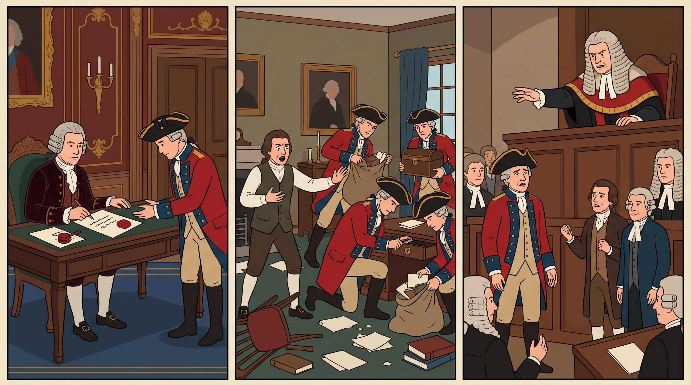
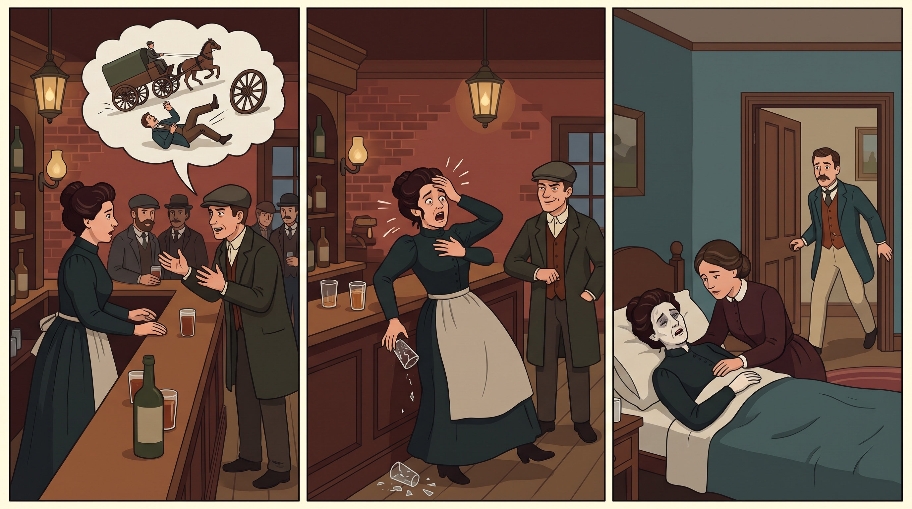
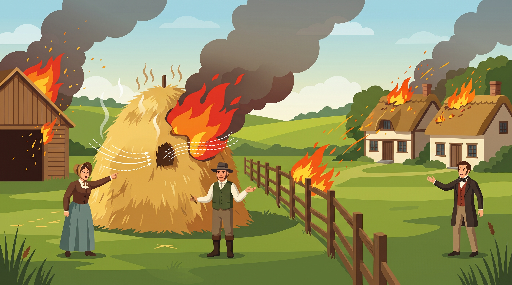
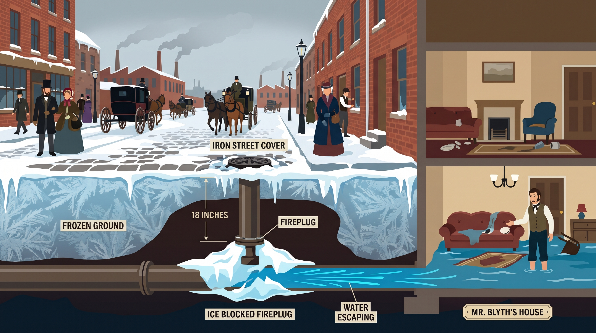
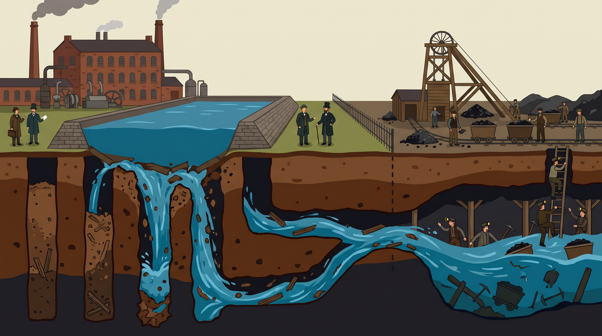
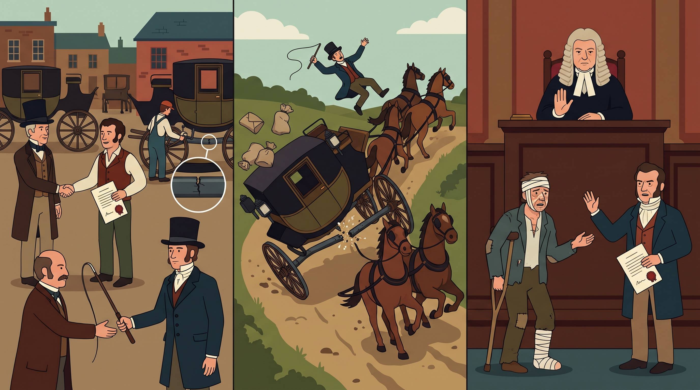
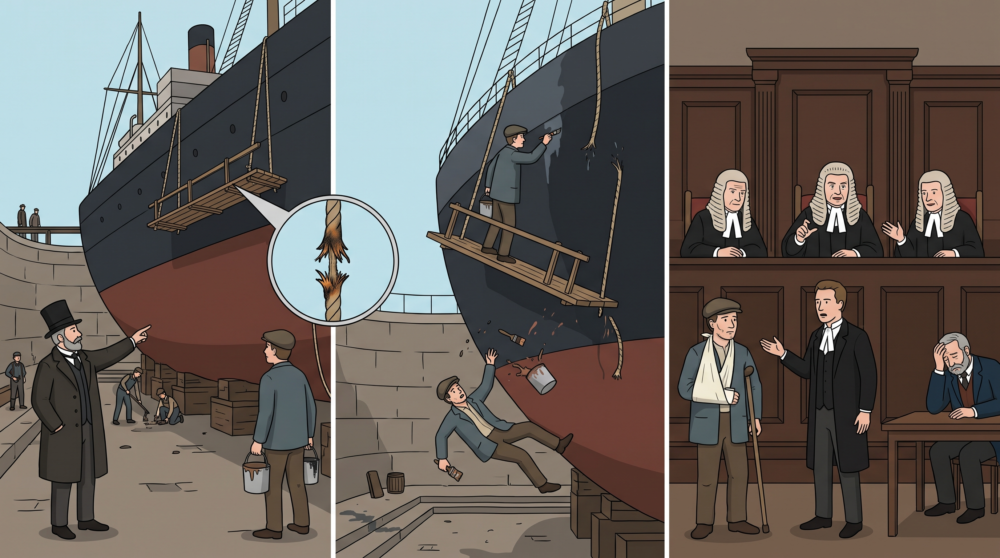
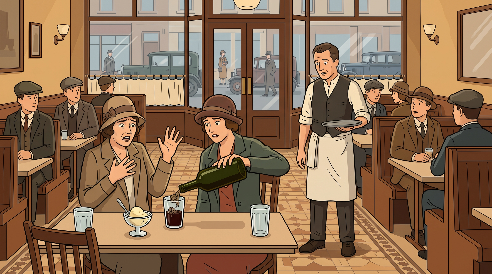

Forget the Latin and Ask One Question: When Life Breaks, Who Pays for the Pieces?
Step outside with me for a moment, onto the pavement of a busy city street, and look around you. A delivery van drives up onto the pavement, because the driver is reading a text message on his phone. High above the street, a tall crane swings a heavy steel beam over the traffic. Inside a hospital, a surgeon holds a sharp knife three millimetres from a patient's throat. And in a quiet office, an accountant signs a report saying that a company is rich. In truth the company is bankrupt, which means it has no money left to pay its debts.
Every second of every day, millions of strangers live and work side by side in a crowded modern world. We drive heavy machines, we give professional advice to people who trust us, and we build right next to our neighbours' homes. Most of the time, nobody gets hurt. But sometimes things go wrong. A person's health is ruined, a family house burns down, or the savings of a whole lifetime disappear overnight.
When that happens, one question comes before all the others. The person who was hurt and the person who caused the harm may be complete strangers, with no agreement of any kind between them. Should the courts make the person who caused the harm pay money to repair the victim's life? Or must the victim carry the whole loss alone, as a piece of bad luck? In its shortest form, the question is simply this. Who pays?
Remember that question, because it is the heart of this whole course. Every case you will meet in this chapter is one more answer to it. The part of the law that answers it is called tort law.
The word tort comes from old Norman French, which was the language of the English courts for some centuries after the Normans conquered England in 1066. In Norman French, tort simply means a wrong. The word came into French from the Latin word tortum, which meant something twisted or crooked, rather than straight. So a tort is a wrong that one person does to another, and tort law decides when the wrongdoer must pay for it. The money a court orders a wrongdoer to pay is called damages. Its purpose is compensation, which means making up for the harm as far as money can.
Two more words will come back again and again. The person who has been harmed and brings the case to court is called the claimant. The person who is said to have caused the harm, and who must defend himself in court, is called the defendant. A tort case is a civil case, which means a dispute between private parties about money or rights, not a criminal trial.
When a disaster happens, different parts of the law ask different questions, and it helps to see them side by side. Criminal law asks whether the state should punish the wrongdoer, by sending him to prison or making him pay a fine to the state. Contract law asks whether the two people had made a contract, which is a private agreement, before anything went wrong, and whether one of them broke it. Tort law asks a more direct and more human question. It asks whether the person who caused the harm must pay money to the person he harmed, even when the two were strangers with no agreement at all.
Think back to the delivery van on the pavement. If the van hits someone, criminal law may punish the driver for driving carelessly, but any fine goes to the state and not to the injured person. Contract law cannot help either, because the injured person never made any agreement with the driver. Only tort law asks whether the driver must pay the injured person for the harm he caused. That is the gap tort law fills.
But tort law is not simple, because every judge in this chapter is trying to balance two dangers at the same time. If the law makes people pay too rarely, injured victims are left alone with their ruined lives. If the law makes people pay too often, ordinary citizens, businesses, and public services could face an endless number of lawsuits. A lawsuit is simply a case that one person brings against another in court. So behind the question of who pays, there is always a second question. How can the law give fair compensation to injured victims, without exposing everyone else to an endless number of claims?
Here is a warning before we begin. If you try to learn tort law as a list of twenty or thirty cases to memorise before your summer exams, you will quickly feel lost. But British tort law is really one long conversation between judges, lasting about two hundred and fifty years. The conversation is about where to draw the line between your freedom to act and your neighbour's right to stay safe. Every case in this chapter happened because an older rule failed to solve a real dispute between real people.
So each case answers a problem left open by an earlier case, and then passes a new problem on to the next one. You will hear how a judge in 1932 solved an injustice that the courts had created in 1842. You will hear how the Supreme Court, which is the highest court in the United Kingdom, corrected in 2018 a common misunderstanding of a case from 1990. Once you hear how each case leads to the next, you will remember every one of them with ease.
II.The Sacred Fortress: Trespass, State Power, and the Old World of Direct Wrongs
Before Negligence Existed, the Common Law Guarded Two Things Above All Else: Your Body and Your Land
Let us begin in London, in the year 1762. Four men break into the house of a writer in the middle of the day. For four hours they search every room, they break open his locked desks and boxes, and they carry away hundreds of his private papers and books. These men are not thieves. They are officers sent by the King's government, and they carry a written order signed by one of the King's most senior ministers. Yet when the writer takes them to court, the court decides that they have done wrong, and that the minister's order is worth nothing.
Remember this result, because it still protects your freedom today. The writer's name was John Entick, and the leader of the officers was Nathan Carrington. The case is called Entick v Carrington, and it was decided in 1765. The v stands for versus, a Latin word which simply means against, so the name means Entick against Carrington. The person who brings the case comes first, and we will call this case Entick.
To follow Entick, you need to know what tort law looked like in the eighteenth century, which means the years from 1700 to 1799. This was long before factories, steam trains, or motor cars. Negligence, the part of tort law that deals with carelessness, had not yet grown into the large subject it is today. In that early world of farms and small shops, tort law was not mainly worried about accidents caused by carelessness. Instead, it cared most about physical boundaries, which means the edge of your body and the edge of your land.
These rules were part of the common law, which is the law made by judges through their decisions over the centuries, rather than by Parliament. The common law protected a citizen's body and private home more strongly than almost anything else. That protection came through one of the oldest remedies in the English courts, called trespass. A remedy is the help a court gives you when someone has wronged you. In those days, a case began with a writ, which was a written order from the court. The writ of trespass was one of the oldest of them all.
Trespass means crossing a person's boundary without permission, by touching their body or by entering their land. Under the rule of trespass, the court did not care whether the person who crossed the boundary meant well. It did not even care whether he broke anything once he was inside. Crossing the boundary without lawful permission was itself the wrong. Keep that rule in mind, because the whole of Entick depends on it.
Now come back to London in the autumn of 1762, the year of the raid in Entick. King George the Third had recently come to the throne, and his government ministers were deeply unpopular. There was no police force of the modern kind at the time. The government was afraid of political critics who used printing presses to publish weekly pamphlets attacking the King's policies. A pamphlet is a short printed paper, a little like a thin magazine, sold cheaply to the public.
One of those critics was John Entick, a schoolmaster and writer. Entick wrote for an opposition paper called The Monitor, or British Freeholder. An opposition paper is one that argues against the government of the day. The government wanted to silence him, and the minister who acted was Lord Halifax, the Secretary of State. A Secretary of State is one of the most senior ministers in the government.
Lord Halifax signed a document called a general warrant. A warrant is a written order that allows officers to search a place, take things away, or arrest a person. The general warrant in Entick was written by a government minister himself, rather than by a judge in a court. With this order in their hands, four of the King's officers, led by Nathan Carrington, went to Entick's home in Stepney, in East London.
You already know what they did there. In Entick, the officers broke in during the day and searched every private room for four hours. They broke open Entick's locked desks and boxes, and they carried away hundreds of his personal papers and books.
So Entick sued the officers for trespass on his land. To sue someone means to take them to a civil court and ask for money for the wrong they did to you. In Entick, John Entick is the claimant, and Carrington and the other officers are the defendants.
The government's lawyers gave a bold reply in Entick. They said that ministers had always signed warrants like this one. They also said that the state needed this power to protect the safety of the nation and to keep the peace. Lawyers call this kind of argument state necessity, which means that the state must be allowed to do something because it needs to.
Now imagine that you are the judge in Entick. On one side, Entick says that four men entered his home without any law allowing it, and took away his private papers. On the other side, the government says that it needs this power to keep the country safe, and that ministers have always used it. Before you hear what the court decided, take a moment to decide for yourself who should win in Entick, the writer or the King's officers.
The question for the court in Entick was this. Can government officials enter a citizen's home and take his private papers, when no law gives them that power? By no law, I mean no Act of Parliament and no rule of the common law. An Act of Parliament is a written law passed by Parliament, the body that makes laws for the whole country.
The judge who answered it was Lord Camden, the Chief Justice of the Court of Common Pleas. A Chief Justice is the most senior judge of his court, and the Court of Common Pleas was one of the main courts of England at the time. Lord Camden's answer in Entick is still read by law students today, and his answer was a clear no. No, government officials cannot enter a citizen's home and take his papers, unless a law gives them that exact power.
In Entick, Lord Camden drew a line between the freedom of an ordinary citizen and the power of the state, and that line is still there today. An ordinary citizen is free to do anything, unless a law forbids it. A government official is different, because he may do nothing unless a specific law gives him the power to do it. That law must be either an Act of Parliament or a clear rule of the common law. In Entick, the government could point to neither.
Then Lord Camden turned to the government's strongest argument, the argument of state necessity. He held in Entick that state necessity is never a legal excuse for entering a citizen's home. So the general warrant that Lord Halifax had signed gave the officers no lawful power at all.
And here is the part of Entick that surprises most students. Suppose the officers had been very careful. Suppose they had not broken a single lock, and had not scratched a single wooden board. They would still have committed a tort.
The moment their boots stepped across Entick's doorway without lawful authority, which means without a power given by law, the wrong was complete. Lawyers call this tort trespass to land. Old lawyers used a Latin name for it, trespass quare clausum fregit, which means trespass by breaking into another person's enclosed land.
So who wins in Entick, the writer or the King's officers? Entick wins. The officers were liable in trespass, which means the law held them responsible for breaking into Entick's home and taking his papers, and made them pay for it.
Now think back to the start, when I said that the result in Entick still protects your freedom today. Entick shows that tort law is much more than a system for road accidents. It is one of the foundations of freedom under the British constitution, which is the set of basic rules about how the country is governed. And it is one of the foundations of what lawyers call the Rule of Law. The Rule of Law means that the government itself must obey the law, and it may only use the powers that the law gives it. That is the lesson of Entick.

Case Illustration •Entick v Carrington (1765): Lord Halifax signs a general warrant, the King's officers break into John Entick's house to seize his private papers, and Lord Camden CJ holds them liable in trespass under the Rule of Law.
What Happens When Someone Hurts You Without Touching You or Stepping onto Your Property?
Entick shows how strong the old tort of trespass was. Trespass is what lawyers call actionable per se, a Latin phrase which means actionable in itself. Actionable means that you can bring a case to court about it. So in Entick, the claimant wins simply by proving that the boundary was crossed. He does not need to prove that he lost a single penny, or that anyone was injured. The same rule works when an official kicks down your door, or when a stranger punches you in the street.
But here a new problem appears. Trespass had a serious weakness, because the interference had to be direct and physical. Direct means that the wrongdoer's own act touches your body or enters your land, like a punch, or a boot through a doorway in Entick. So what happens if someone harms you terribly without ever touching you or stepping onto your land?
Here is a woman who faced exactly that problem. She is standing behind the bar of her pub when a regular customer walks in with terrible news about her husband. The news is a lie, made up as a joke. Yet the shock makes her so ill that she is sick for weeks, and her hair turns permanently white. The man never touched her, and he never went anywhere he was not allowed to be. So under the old law of trespass, she had no case at all.
Remember this, because by the end of this story a judge will find a new way to make that man pay. The woman was Mrs Wilkinson, and the man who told the lie was Thomas Downton. The case is called Wilkinson v Downton, which simply means Wilkinson against Downton, and it was decided in 1897. We will call it Wilkinson.
To follow Wilkinson, picture East London at the end of the nineteenth century, when British cities were growing larger and more crowded every year. In Wilkinson, a husband and wife, Thomas and Lavinia Wilkinson, ran a public house called the Albion, in Limehouse. Limehouse is a district of East London beside the river Thames. A public house, or pub, is a place where people buy and drink beer and other drinks, and the woman who runs it is called the landlady.
One day, Mr Wilkinson took the train to watch the horse races at Harlow, a town to the north-east of London. That afternoon, a regular customer named Thomas Downton walked into the pub. Downton decided to play what he thought was a clever practical joke on the landlady. A practical joke is a trick played on someone so that others can laugh at them.
With a completely serious face, Downton told Mrs Wilkinson that her husband had been in an accident on his way back from the races. He said that her husband had been thrown from a horse-drawn wagon, which is a large open cart pulled by horses. He said that her husband was lying at a pub in Leytonstone, on the eastern side of London, with both of his legs broken. And he told her to take two pillows with her and go at once in a horse-drawn cab to bring him home. A horse-drawn cab was the taxi of those days, a small carriage pulled by a horse and driven for hire.
Think about how real the story in Wilkinson sounded. There was a place, an injury, and even an instruction to bring two pillows. But every word was a lie.
The shock of hearing that her husband had been crippled was so severe that Mrs Wilkinson became very ill. She suffered weeks of violent vomiting, and her hair turned permanently white. She also suffered a serious nervous breakdown, which means that her mind and body collapsed under the shock, and it nearly drove her mad. All this came from a few sentences spoken across a bar as a joke.
Now notice the legal problem in Wilkinson. Downton had not touched Mrs Wilkinson, so there was no trespass to her body. He was a customer standing in a public bar where customers were welcome, so there was no trespass to her land either. The old law that protected Entick so well seemed to have nothing to offer in Wilkinson.
Now put yourself in the place of the judge in Wilkinson. On one side, Mrs Wilkinson says that a cruel lie has made her seriously ill, and that the man who told it should pay. On the other side stands the old law, because Downton never touched her and never entered her land without permission. Before you hear the answer, decide for yourself who should win in Wilkinson, the landlady or the man who played the joke.
The question for the court in Wilkinson was this. Can tort law make a person pay when he deliberately tells a false story that makes the victim seriously ill, even though he never touched her?
The judge in Wilkinson was Mr Justice Wright, a judge of the High Court, which is the court in England where serious civil cases are first heard. He heard Wilkinson as the trial judge, which means the judge who first hears the evidence and decides the case. Mr Justice Wright refused to let Downton escape just because his cruel act did not fit any of the old categories of tort.
He looked first at those old categories, one by one. Battery is the tort of touching another person's body without a lawful reason, and it did not apply in Wilkinson, because Downton never touched her. Deceit is the tort of fraud in business, where someone tells a lie to trick you into losing money. Deceit did not fit Wilkinson neatly either, because it was made for people who lose money through a lie, not for people whose health breaks down.
So in Wilkinson, Mr Justice Wright created a new rule for harm that is caused on purpose but indirectly, without any touch. The rule uses two old words that need explaining. The first is wilfully, which means deliberately. The second is calculated, which here means plainly likely.
Here is the rule in Wilkinson. Suppose a person wilfully does an act that is calculated to cause physical harm to someone else. If that act really does cause physical illness or a recognised psychiatric disorder, the law treats him as if he had intended that harm. A recognised psychiatric disorder is an illness of the mind that doctors accept as a real medical condition, not just ordinary sadness or fear.
So the answer to the question in Wilkinson is yes. Yes, tort law can make a person pay when he deliberately tells a false story that makes the victim seriously ill, even though he never touched her. So who wins in Wilkinson, the landlady or the man who played the joke? Mrs Wilkinson wins, and Downton was liable for the illness that his lie had caused.
Now notice how different Wilkinson is from Entick. In Entick, the claimant won without proving any damage at all, because trespass is actionable in itself. In Wilkinson, the harm was indirect, so Mrs Wilkinson had to prove that she really became ill. That is the price of the new rule in Wilkinson, because it protects you only when real illness follows. And that is the lesson of Wilkinson. Spoken words can hurt a person as badly as a blow, and tort law will make the speaker pay when a deliberate lie destroys a victim's health.
But the rule in Wilkinson is not only a piece of history. More than a hundred years later, it came back to the Supreme Court, the highest court in the United Kingdom. The case is called Rhodes v OPO, and it was decided in 2015. OPO is not a name but a set of letters, used by the court to keep the identity of a child private. We will call this case Rhodes.
In Rhodes, a father had written a book about his own life, including the abuse he had suffered as a child. The child's mother went to court to stop the book from being published, because she feared that reading it would seriously harm their son. She relied on the rule in Wilkinson, so the Supreme Court in Rhodes had to explain exactly what that rule requires.
The Supreme Court in Rhodes confirmed that the rule in Wilkinson has two elements, and an element is one part of a rule that must be proved. The first is the conduct element, which means words or acts directed at the victim without justification, which means without a good reason. The second is the mental element, which means that the wrongdoer actually intended to cause severe distress or physical harm. Distress means deep suffering of the mind, such as fear or grief.
So in Rhodes, the Supreme Court decided that the book could be published. The father had a good reason to tell the story of his own life, and he did not intend to harm his son. In Rhodes, the rule in Wilkinson was kept alive, but it was kept for those who really mean to cause harm.

Case Illustration •Wilkinson v Downton (1897): Downton tells Mrs Wilkinson the false story at the Albion pub that her husband broke both legs in a wagon crash, causing immediate nervous shock and weeks of severe physical and mental illness.
Revision • Lex Stemma Pedagogy
In this first block we saw how the old law protected the body and the home, and how it changed when harm came through words instead of force. First, in Entick, from 1765, the King's officers broke into a writer's house with a minister's warrant. The court in Entick decided that government officials cannot enter a citizen's home and take his papers unless a law gives them that power. State necessity was no excuse. Because trespass is actionable in itself, Entick won without proving any damage at all. Second, in Wilkinson, from 1897, a cruel lie told in a pub made a landlady seriously ill without a single touch. The court in Wilkinson decided that a person who deliberately tells a lie plainly likely to cause harm must pay when real illness follows. Because the harm in Wilkinson was indirect, the illness had to be proved. Later, in Rhodes, from 2015, the Supreme Court confirmed that the rule in Wilkinson needs two things. It needs words or acts aimed at the victim without a good reason, and a real intention to cause harm. But here a new problem appears. What happens when nobody intends any harm at all, and an accident happens simply because someone was careless? That is the question in Vaughan, from 1837.
III.The Industrial Revolution: Creating the "Reasonable Person" and the Trap of Contract
Why "I Did My Best" Is the Worst Excuse in a Courtroom
A farmer is told again and again, for five whole weeks, that his haystack is going to catch fire. Each time, he refuses to do anything about it. When one neighbour warns him that the fire could burn down the cottages next door, the farmer gives an answer that shows exactly how he thought about the risk. He says that his hay is insured, and that he will chance it. In other words, he is ready to take the risk, because if anything goes wrong, his insurance will pay him back.
The fire comes, just as the neighbours said it would, and it burns down two cottages that belong to the man next door. Then, in court, the farmer's lawyer makes an argument that sounds almost kind. He says that the farmer is not a very clever man, and that he honestly did his best. Remember this argument, because the whole case turns on it.
The case is called Vaughan v Menlove, and it was decided in 1837. Vaughan was the neighbour who lost his cottages, and Menlove was the farmer with the haystack. The letter v stands for versus, which simply means against, so the name means Vaughan against Menlove. We will call it Vaughan. Vaughan was one of the first cases about negligence, which is the part of tort law that deals with carelessness. Tort law itself, as you will remember, is the law that makes people pay for harm they cause to others.
Let us go back to the beginning of Vaughan. It is the summer of 1835, in Shropshire, a farming county in the west of England. In those days, farmers cut the grass in summer and dried it to make hay, which they fed to their animals in winter. They piled the hay into large stacks outdoors, and each stack was called a hayrick.
To follow what happened in Vaughan, you need one piece of farming knowledge that every farmer then understood. If you stack hay while it is still wet, tiny living things called bacteria start to break down the grass inside the pile. This process is called fermentation, and it makes heat. In a tightly packed stack, that heat cannot escape, so the inside grows hotter and hotter. In the end, the hay can catch fire all by itself, with no flame and no spark. This is called spontaneous combustion, which means burning that starts on its own.
In Vaughan, the farmer built a large stack of damp hay right beside the fence at the edge of his land. On the other side of that fence stood two small country cottages that belonged to his neighbour Vaughan. For five weeks, the damp haystack steamed and grew hotter. Neighbours warned the farmer many times that the hay would burst into flames and burn down the cottages. He refused to take the stack down, and that is when he said that his hay was insured and that he would chance it.
Then the farmer in Vaughan did something that made things even worse. He wanted to cool the stack down, so he cut a hole for air right through the middle of it. But that hole let fresh air rush into the hot centre of the stack. It worked just like the chimney above a fire, which pulls in air and makes the flames burn stronger. The haystack burst into flames. The fire spread to the farmer's own barn, and then it crossed to Vaughan's cottages and burned them to the ground.
So Vaughan, the neighbour, took the farmer to court and asked for money for his cottages. In the language of tort law, Vaughan was the claimant, the person who brings the case to court. The farmer was the defendant, the person the case is brought against. The case was heard with a jury, which is a group of ordinary citizens who decide the facts and the result of a trial.
Now comes the argument that you were asked to remember. The farmer's lawyer did not say that his client had been careful. Instead, he admitted that the farmer did not have a high level of intelligence. He said that the jury should ask only one thing in Vaughan, which was whether the farmer had acted honestly, to the best of his own limited ability. After all, how could the law blame a slow man for not being as clever as other people?
So now it is your turn to judge Vaughan. The neighbour says that any sensible person would have taken that stack down after five weeks of warnings. The farmer says that he did his best with the mind he was born with, and that nobody can ask for more. Which side would you choose in Vaughan, the neighbour or the farmer? Think about it for a moment, and then we will hear what the court said.
The question in Vaughan reached the Court of Common Pleas. This was one of the old royal courts in Westminster in London, and it heard disputes between private people about money, land, and harm. The head of that court was called the Chief Justice of the Common Pleas, and in Vaughan that was Chief Justice Tindal. The real question for Chief Justice Tindal was this. In negligence, should a person be judged by whether they did their own personal best, or by how an ordinary, sensible person would have behaved?
Chief Justice Tindal said that the farmer's excuse could not be accepted. He gave a simple reason that is still quoted from Vaughan. Suppose the law depended on how clever or careful each person happened to be. Then, he said, the law would be as different from person to person as the length of each person's foot. Some people have long feet and some have short feet, and a rule that changed like that would not be a rule at all.
There was a second problem with the farmer's argument in Vaughan. A court cannot look inside a person's head and measure how intelligent that person is. And tort law is not like a religious court that asks whether your heart was good. It is a practical system that sets one minimum level of safety for everyone who lives among other people.
So the court in Vaughan said that a person's conduct must be measured against an objective standard. Objective means a standard that comes from outside the person, the same for everyone, instead of one that depends on the person's own mind. In Vaughan, that standard was a person of ordinary prudence. Prudence simply means carefulness and common sense. Later judges began to call this imaginary sensible person the reasonable person, and this is the name you will hear most often in tort law.
So the answer to the question in Vaughan is clear. A person in negligence is judged by the objective standard of an ordinary, sensible person, and not by whether they did their own personal best. An ordinary, sensible person would never have left a steaming haystack beside a neighbour's cottages for five weeks. So who wins in Vaughan, the neighbour or the farmer? The neighbour wins, and the farmer must pay for the cottages he burned down.
Now think back to the farmer's argument that he did his best. It sounded kind, but it was the worst excuse he could have given. That is the lesson of Vaughan. Saying that you did your best is no defence, because the law asks whether you did what an ordinary, sensible person would do.
Vaughan also marks a change in the kind of harm that courts had to deal with. In the early nineteenth century, the Industrial Revolution changed Britain, as factories and machines spread across the country. Coal mines went deep under the ground, steam engines filled crowded towns, and horse-drawn coaches carried the mail at speed along narrow roads. Small cottages stood close to farms and workshops. Most accidents in this new world were not deliberate acts of cruelty, like the cruel lie told in Wilkinson. They were caused by carelessness, just like the haystack in Vaughan. So, as the tort of negligence began to grow in the 1830s, the court in Vaughan had to answer one of the first big questions about it. How should the law judge a careless person? Vaughan gave the answer: by the standard of the ordinary, sensible person.

Case Illustration •Vaughan v Menlove (1837): Menlove cuts an air hole through his steaming damp haystack, feeding oxygen into the fermenting hay until flames spread across the boundary fence and burn down Vaughan's cottages.
Does the "Reasonable Person" Have to Predict Record-Breaking Natural Disasters?
One winter in Birmingham, water from a pipe under the street pushes through the ground and floods a man's house. His furniture is ruined. The pipe belongs to the water company, so the man takes the company to court. He loses, and the company pays him nothing. Keep this result in mind, because it seems to go against what we just learned in Vaughan.
The case is called Blyth v Birmingham Waterworks Company, and it was decided in 1856. It simply means Mr Blyth, the man whose house was flooded, against the company that supplied water to Birmingham. We will call it Blyth.
Blyth came nineteen years after Vaughan, and it answered a worry that Vaughan had created. Vaughan said that everyone is judged by the objective standard of the reasonable person. So companies and people who owned property began to wonder what that standard asked of them. If your equipment breaks and damages someone's property, are you always at fault? That is the question in Blyth.
To follow the story of Blyth, you need to know how a city fought fires in the 1850s. Growing cities like Birmingham were digging up their streets to lay iron pipes, and those pipes carried water under pressure beneath the ground. There were no fire hydrants standing on the pavement yet. Instead, Parliament required the water companies to fit a device called a fireplug every hundred yards along the main pipe.
A fireplug was a stopper made of wood or iron, pushed into a short upright pipe about eighteen inches under the street. An iron box in the road covered it. When a house caught fire, firefighters opened the cover and pulled out the plug, and water rushed up to fill their fire engines. Around the neck of the plug there was a small gap, so that any water leaking out could drain away safely into the earth.
In Blyth, the water company fitted a fireplug in the street outside Mr Blyth's house. It was built to the best engineering standards of the time, and for twenty-five years it worked without a single problem.
Then came the winter of 1855, one of the coldest winters ever recorded in Britain. The ground froze to a depth that nobody in Birmingham had ever seen before. Deep under the street, thick ice formed around the top of the fireplug in Blyth. The ice pushed the stopper loose, and it also blocked the small gap that let leaking water drain away. The water under pressure had nowhere to go, so it forced its way through the soil under the pavement and into Mr Blyth's house.
Mr Blyth sued the water company for negligence. He argued that the company should have cleared away the ice under the ground before it could do any damage.
Let us hear both sides in Blyth, just as the judges heard them. Mr Blyth says that the water came from the company's pipe and ruined his home, so the company should pay. The water company says that it built the fireplug properly, that it worked safely for twenty-five years, and that nobody could have expected such a freeze. If you were deciding Blyth, would you make the water company pay Mr Blyth, or not?
The question in Blyth was this. Is a defendant careless when an extreme natural event, worse than anything seen before, makes properly built equipment fail?
Blyth was decided in the Court of Exchequer. This was another of the old royal courts in Westminster, and by this time it heard ordinary disputes between private people. Its judges were called Barons, which was simply the title of a judge in that court, and its head judge was called the Chief Baron. In Blyth, the judgment that every law student remembers came from Baron Alderson.
Baron Alderson gave a definition of negligence that law students across the English-speaking world still learn by heart. Negligence, he said, means failing to do something that a reasonable person would do, guided by the things that normally guide people in everyday life. It also means doing something that a careful and reasonable person would not do. Notice that the reasonable person from Vaughan is at the centre of Baron Alderson's definition in Blyth.
Now apply that definition to the fireplug in Blyth. A reasonable person is careful and sensible, but he is not someone who can see the future. He does not have to guard against a natural event so extreme that nobody could have expected it. The fireplug in Blyth had worked safely for twenty-five years, and no ordinary engineer could have predicted the freeze of 1855.
So the answer to the question in Blyth is no. No, the water company was not careless when a freeze worse than anything seen before made its properly built fireplug fail. The company had done nothing that a reasonable person would not do. So who wins in Blyth, Mr Blyth or the water company? The water company wins, and it pays Mr Blyth nothing for his flooded house.
Now think back to the feeling at the start, that Blyth seems to go against Vaughan. In fact, Blyth and Vaughan fit together, and you should always learn them as a pair. Vaughan shows that you cannot fall below the standard of the ordinary person by saying that you were slow or clumsy. Blyth shows that you do not have to rise above the standard of the ordinary person by predicting disasters that nobody could foresee. That is the lesson of Blyth. The reasonable person guards against the risks that a sensible person can expect, not against every rare and extreme event of nature.

Case Illustration •Blyth v Birmingham Waterworks Co (1856): Record-breaking frost freezes the ground 18 inches beneath the iron street cover, blocking the underground fireplug with ice and forcing escaping water into Mr Blyth's house.
When You Are Completely Innocent of Carelessness, Can Your Land Still Make You Liable?
A mill owner wants more water for his factory, so he pays skilled builders to make a large lake for him. He takes no part in the digging, and he does nothing careless at all. But when the lake is filled, the water bursts down through the ground and floods his neighbour's coal mine, and the neighbour has to close his business. Think about Blyth for a moment. Under Blyth, a person who has not been careless does not pay. Yet this mill owner is made to pay for the whole flood.
Notice this result carefully, because it seems to break the rule we have just learned. A man who was not careless still pays. By the end of this story, you will see why the court decided that he had to.
The case is called Rylands v Fletcher, and it was decided in 1868. Rylands was the mill owner, and Fletcher was the neighbour whose coal mine was flooded. It was Fletcher who brought the case, so you might expect his name to come first, and in the earlier courts it did. But when a case reaches the final court, the name of the person who appeals usually comes first, and here that was Rylands. So the name means Rylands against Fletcher, and we will call it Rylands.
To follow the story of Rylands, you need to picture Lancashire, in the north-west of England, in the 1860s. Lancashire was full of cotton mills, which were factories that turned raw cotton into thread and cloth. The machines in those mills were driven by steam engines, and steam engines needed huge amounts of water. Deep under the same land lay coal mines, which dug out the coal that was burned in those engines. So two industries lived side by side, one on the surface and one under the ground.
In Rylands, the mill owner had a large cotton mill in a place called Ainsworth. His neighbour Fletcher had rented the right to dig coal under the land next door, and he was working coal mines there. To get more water for his mill, Rylands hired experienced engineers and builders to make a reservoir on land close to Fletcher's mines. A reservoir is a large lake made by people to store water. Rylands himself took no part in the digging, and he did nothing careless.
But while the builders in Rylands were digging the bed of the reservoir, they found five old mine shafts. A mine shaft is a deep hole that goes straight down into the ground to reach a mine below. These shafts had been dug many years earlier, then left empty and filled in with loose soil and rubbish. Nobody knew that the old shafts were joined, under the ground, to Fletcher's working coal mine. The builders were careless, though, because they did not test whether the filled shafts could hold back the weight of water above them.
In December 1860, the reservoir in Rylands was filled with millions of gallons of water. The weight of that water pushed straight through the loose earth in the old shafts. The water rushed through the tunnels under the ground and flooded Fletcher's coal mine, and Fletcher had to stop working his mine.
So Fletcher took Rylands to court. But here a real problem appears for Fletcher. Think back to Blyth. Under Blyth, you are liable in negligence only if you failed to act as a reasonable person would. Rylands himself had not been careless at all. He had hired skilled builders and left the work to them. The builders were careless, but they were independent contractors, which means a separate firm hired to do a job, not the mill owner's own workers.
Now let us put the two sides of Rylands next to each other. Fletcher says that Rylands chose to collect a huge mass of water next to his mine for his own business, and that this water destroyed his mine. Rylands says that he did nothing careless, that he hired good builders, and that under Blyth a person without fault should not pay. So who do you think should win in Rylands, Fletcher or the mill owner?
The question in Rylands was this. Should a landowner be strictly liable when he brings something dangerous and unusual onto his land and it escapes and damages his neighbour's property? Strictly liable means legally responsible even when you were not at fault at all.
Rylands passed through three courts, and the result changed along the way. The first court to hear it, the Court of Exchequer, decided in favour of the mill owner. Fletcher appealed, and the case went to the Court of Exchequer Chamber. In those days, this was a court of appeal, made up of judges from the other royal courts, which heard appeals from their decisions.
In the Court of Exchequer Chamber, the judgment in Rylands was given by Mr Justice Blackburn, and his answer was yes. He said that a person may bring something onto his land for his own purposes, and collect and keep it there. If that thing is likely to do harm when it escapes, he must keep it in at his own risk. If it does escape, he is liable for all the damage that naturally follows. This is true even if he was as careful as possible himself.
Mr Justice Blackburn also rejected the argument about the builders in Rylands. A landowner cannot avoid responsibility by blaming the independent builders he hired. In Rylands, the water was the mill owner's water, collected for the mill owner's business, so the risk was his as well.
Rylands then appealed to the House of Lords. Until 2009, the House of Lords was the highest court in the United Kingdom, where a small group of senior judges heard the final appeals. In Rylands, the leading judge in the House of Lords was Lord Cairns, the Lord Chancellor. The Lord Chancellor was the most senior judge in the country, and he was also a member of the government.
The House of Lords agreed with Mr Justice Blackburn, but Lord Cairns added an important condition in Rylands. The rule applies only when the landowner is making a non-natural use of the land. A non-natural use means an extraordinary and unusual use, like storing a huge artificial lake of water. It does not cover an ordinary, natural use, like mining coal or keeping normal water pipes in a house.
So the answer to the question in Rylands is yes. Yes, a landowner who brings something dangerous onto his land for a non-natural use is strictly liable when it escapes and damages his neighbour's property. He must pay even though he was not careless. So who wins in Rylands, Fletcher or the mill owner? Fletcher wins, and Rylands must pay for the flooded mine.
Now think back to the puzzle at the start of Rylands, that a man who was not careless still pays. This is what strict liability means. In negligence, as in Vaughan and Blyth, the court asks whether you behaved like a reasonable person. In Rylands, the court does not ask that question at all. If you choose to collect something dangerous on your land for an unusual purpose, the risk that it escapes is yours. That is the lesson of Rylands: a person who brings a special danger onto his land pays when it escapes, whether he was careful or not.
The rule in Rylands is still part of the law today, but in a narrower form. In 2003, the House of Lords looked at the rule again in Transco plc v Stockport Metropolitan Borough Council. That name simply means Transco, a gas pipeline company, against the local council of the town of Stockport. We will call it Transco. In Transco, the House of Lords confirmed that the rule in Rylands now belongs to a tort called private nuisance. Private nuisance is the tort that protects a person from unreasonable interference with the use and enjoyment of their land, usually by a neighbour. Transco also said that the rule in Rylands applies only to an extraordinary and unusual use of land. That use must create a very high risk if the thing escapes. So, after Transco, Rylands is a narrow rule for truly unusual dangers, and not a rule for every escape from a neighbour's land.

Case Illustration •Rylands v Fletcher (1868): Water collected in Rylands's artificial mill reservoir bursts downward through forgotten, loosely filled coal shafts and floods Fletcher's neighbouring coal mine.
Revision • Lex Stemma Pedagogy
In this block we saw how the courts dealt with the new accidents of the Industrial Revolution. First, in Vaughan, from 1837, a farmer let his steaming haystack burn down his neighbour's cottages. Vaughan asked whether a careless person is judged by his own best effort or by an outside standard. It answered that everyone is judged by the objective standard of the ordinary, sensible person. Second, in Blyth, from 1856, a record freeze broke a fireplug and flooded a house. Blyth asked whether a company is careless when a freeze that nobody could expect makes good equipment fail. It answered no, the company is not careless, because the reasonable person guards only against risks a sensible person can expect. Third, in Rylands, from 1868, water from a mill owner's reservoir flooded his neighbour's coal mine. Rylands asked whether a landowner who was not careless must still pay when a dangerous thing he collected escapes. It answered yes, he must pay, if his use of the land was non-natural. Transco, from 2003, kept that rule but limited it to truly unusual uses of land. But here a new problem appears. What happens when a careless repairer injures a man who has no contract with him? That is the question in Winterbottom, from 1842.
The 90-Year Trap of Privity: How a Broken Mail-Coach Axle Locked Injured Victims Out of Court
A man is driving a heavy coach full of mail along the road when an iron rod under the coach suddenly snaps. The coach falls over, and he is thrown violently to the ground. He is left crippled for the rest of his life. The rod broke because the man paid to repair the coach had done his work carelessly. Yet when the driver takes that repairer to court, he loses, and he does not get a single pound.
Remember this result, because it sounds wrong, and it is even worse than it sounds. This one decision stopped injured people from winning cases like this for the next ninety years.
The case is called Winterbottom v Wright, and it was decided in 1842. Winterbottom was the driver who was crippled, and Wright was the man paid to keep the coach in good repair. So the name simply means Winterbottom against Wright, and we will call it Winterbottom.
Winterbottom was decided a few years after Vaughan, and before Blyth and Rylands. But it belongs to a different story from the landowners and their haystacks, fireplugs, and reservoirs. In Winterbottom, the problem was not how careful a person must be. The problem was who is even allowed to sue.
To follow the story of Winterbottom, you need to picture how letters travelled in Britain in the early 1840s, just before railways joined up the whole country. The Royal Mail was carried from city to city in mail coaches. A mail coach was a heavy carriage with four wheels, pulled at high speed by a team of four horses. The coaches ran along turnpike roads, which were roads where travellers paid a fee to use them, and those roads were often rough and bumpy.
The head of the postal service was a government officer called the Postmaster General. He did not employ every coach builder and every driver himself. Instead, the work was shared out through separate contracts, and this is the detail that decides Winterbottom.
First, the Postmaster General made a contract with Wright, a coach specialist. Under that contract, Wright supplied the mail coaches and promised to keep them safe and in good repair. Second, the Postmaster General made a completely separate contract with a coaching firm called Atkinson and Birch. That firm supplied the horses and the drivers, who were called coachmen, to pull the mail coaches between Hartford and Holyhead. Winterbottom was one of those coachmen. He worked for Atkinson, and his job was to sit high on the front seat of the coach and drive the horses.
Now look at what went wrong in Winterbottom. Under the coach sat heavy iron rods called axles. Each axle joined a left wheel to a right wheel. It carried the whole weight of the wooden coach, the passengers, the heavy bags of mail, and the driver. All that weight bounced over rough stones as the coach travelled at about ten miles an hour.
Wright and his workers had done careless, poor maintenance work on the coach in Winterbottom. Inside one of the iron axles there was what lawyers and engineers call a latent defect. A latent defect is a hidden flaw, such as a crack inside the metal. An ordinary driver sitting on the coach could not see it, but a proper mechanic checking the coach should have found it or stopped it from happening.
Because Wright did not check and repair the coach properly, the axle snapped in two while Winterbottom was driving along the road. The heavy coach fell over and threw Winterbottom to the ground, and he was crippled for life. His own employer, Atkinson, had not built or repaired the coach. So Winterbottom sued Wright, the repairer, in tort for negligence.
Now listen carefully to Wright's defence in Winterbottom, because it is the whole case. Wright said that his promise to keep the coach safe was made only to the Postmaster General. Winterbottom had never signed any contract with him. In legal language, there was no privity of contract between Winterbottom and Wright. Privity of contract means the link that exists only between the people who made a contract with each other. So, said Wright, he owed no legal duty at all to the driver who actually sat on the coach.
Imagine that you are sitting as the judge in Winterbottom, in 1842. Winterbottom says that Wright's careless work broke the axle and crippled him, so Wright should pay. Wright says that his only duty came from his contract with the Postmaster General, and that a stranger to that contract cannot sue him. If the choice were yours, who would win in Winterbottom, the crippled driver or the careless repairer?
The question in Winterbottom was this. A contractor carelessly repairs a piece of equipment under a contract with one person, and the equipment injures someone else. Can that injured person sue the contractor in tort, even though he never made a contract with him?
Winterbottom was decided in the Court of Exchequer, the same old royal court that later decided Blyth. Its head judge, as you will remember, was called the Chief Baron, and in Winterbottom that was Lord Abinger. Today almost everyone feels that the driver in Winterbottom should have won. But Lord Abinger and the Court of Exchequer were looking at a new world full of factories and trade. They imagined thousands of strangers suing coach builders and makers of goods after every accident, and that thought frightened them.
So the court in Winterbottom said no. Lord Abinger explained his fear in strong words. He imagined a person outside a contract suing for injuries caused by careless work under that contract. He said that allowing this would lead to the most absurd and outrageous consequences. In his view, there would be no limit to the number of people who could sue every time a carriage broke down.
So the answer to the question in Winterbottom is no. No, a person who is injured by a contractor's careless work cannot sue that contractor in tort if he has no contract with him. So who wins in Winterbottom, the crippled driver or the careless repairer? The repairer wins, and Winterbottom gets nothing for a life spent crippled.
Now think back to the feeling at the start, that this result sounds wrong. Later lawyers agreed, and they gave the mistake in Winterbottom a name, the privity fallacy. A fallacy is a false belief. The privity fallacy is a false belief about contracts. It says that when a repairer or maker has a contract with one person, nobody else can sue him in tort for careless work.
For the next ninety years, Winterbottom stood like a wall between injured people and the careless makers of goods. Think of a factory that made poisoned food or a dangerous tool and sold it to a shopkeeper. The shopkeeper sold it to a husband, and the husband gave it to his wife or his child. The wife or child who was hurt had no contract with the factory. So, because of Winterbottom, the wife or child could not win in court. That is the lesson of Winterbottom: for ninety years, if you had no contract with the careless person, the law of tort gave you nothing.

Case Illustration •Winterbottom v Wright (1842): Separate contracts leave the mail-coach driver outside privity with the maintenance contractor, so when the cracked iron axle snaps on the road, the Court of Exchequer denies his claim.
But here a new problem appears. Forty-one years after Winterbottom, a judge tried to break through the wall that Winterbottom had built. A painter is standing on a wooden plank that hangs down the side of a ship, high above the ground. Suddenly a rope holding the plank snaps, and he falls to the bottom of a deep, empty dock. Just like the driver in Winterbottom, he has no contract with the man who supplied that rope. And yet this time, the injured man wins.
All three judges who decided his appeal agreed that he should win. But they did not agree on why, and they split into two groups with very different reasons. Two judges gave one reason, and the third judge, standing alone, gave a much bigger one. Remember this split, because the reason of that one judge is the one that later changed the law of England.
The case is called Heaven v Pender, and it was decided in 1883. Heaven was the painter who fell, and Pender was the owner of the dock who supplied the rope. So the name simply means Heaven against Pender, and we will call it Heaven.
To follow the story of Heaven, you need to picture the busy docks on the River Thames in East London in the 1880s. Ships of iron and wood carried goods all over the British Empire. After months at sea, the outside of a ship's body, which is called the hull, needed to be scraped clean and painted again. This work was done in a dry dock. A dry dock is a narrow basin beside the river, and a ship floats into it. Then the water is pumped out, so that the ship rests on wooden blocks and workers can reach its hull.
The sides of a ship are tall and curved, so the painters could not stand on the ground to paint the top of the hull. Instead, the owner of the dry dock supplied a piece of equipment called staging and hung it around the outside of the ship. The staging in Heaven was a long, heavy wooden plank on which the painters stood high in the air. Two thick ropes held it up. The ropes passed over the top rail of the ship and were tied down on its deck.
In Heaven, a shipowner brought his ship into Pender's dry dock. He paid Pender for the use of the dock and of the wooden staging hanging from its ropes. The shipowner then hired a master painter named Gray to paint the ship. Gray employed Heaven, a ship painter, to climb onto the plank and do the work.
Now notice the chain of contracts in Heaven, because it looks just like the mail coach in Winterbottom. Pender had a contract with the shipowner. The shipowner had a contract with Gray. And Gray employed Heaven. But Heaven had no contract at all with Pender, the dock owner who supplied the rope.
Before the staging was put up, one of Pender's thick ropes had been badly burned by fire, and the burning had left the fibres inside the rope weak. The moment Heaven stepped onto the high wooden plank, the burned rope snapped. The plank dropped from under his feet, and Heaven fell to the bottom of the dry dock and was badly injured.
So Heaven sued Pender, the dock owner. And you can already guess what Pender's defence was in Heaven. He said that he had no contract with Heaven, so, just as in Winterbottom, he owed Heaven no duty at all.
Before the judges speak in Heaven, listen to the two sides. Heaven says that Pender supplied a burned rope for men to stand on, high above the bottom of the dock, so Pender should pay for his injuries. Pender says that his only contract was with the shipowner, and that the law of Winterbottom protects him from a stranger like Heaven. Think for a moment about who you would choose in Heaven, the injured painter or the dock owner.
The question in Heaven was this. Does the supplier of equipment owe a duty of care to a worker who is injured by it, even though there is no contract between them? A duty of care is a legal duty to take reasonable care not to harm a particular person.
Heaven was decided in the Court of Appeal. The Court of Appeal is the court in England that hears appeals from the decisions of the High Court, the court where serious civil cases are first heard. Above the Court of Appeal, in those days, there was only the House of Lords. In the Court of Appeal, cases are usually decided by three judges sitting together. Most of these judges are called Lords Justices of Appeal, and each one is known as a Lord Justice. The most senior judge of the Court of Appeal has an old title, the Master of the Rolls. The title comes from the time when he looked after the court's records, which were kept on rolls of parchment. Today it simply means the judge who leads the Court of Appeal.
In Heaven, the three judges were Lord Justice Cotton, Lord Justice Bowen, and Brett, the Master of the Rolls, who later became known as Lord Esher. When judges sitting together disagree, the decision follows what most of them think. The larger group is called the majority, and its reasons become the law that later courts must follow. The smaller group is called the minority. Its reasons do not bind later courts, but they are still published, and later judges can read them and use them.
So here is the first answer in Heaven. All three judges agreed that Heaven should win. Yes, Pender owed Heaven a duty to take reasonable care that the staging was safe, even without a contract. But the split came over the reason why, and that split is the most important part of Heaven.
The majority in Heaven, Lord Justice Cotton and Lord Justice Bowen, chose a narrow reason that came from the law of property. Heaven had come onto the dock to do work that was part of Pender's own business. So, in law, Heaven counted as an invited visitor, which lawyers also call an invitee. An invited visitor is a person who comes onto someone's land for a purpose that benefits the owner. The law already said that an owner must take reasonable care that his land and his equipment are safe for invited visitors. So the majority in Heaven decided that Heaven won because he was an invited visitor, and for no wider reason.
Brett, the Master of the Rolls, looked at Heaven very differently. He thought that a worker's right to be safe should not depend on a narrow, technical rule about whether he was an invited visitor on someone's land. So, in the minority in Heaven, Brett proposed something new. It was the first general test for a duty of care in English law.
Brett's test in Heaven went like this. Sometimes one person is in such a position towards another person that anyone with ordinary sense would see a clear danger. They would see that if they did not use ordinary care and skill, they would cause injury to that other person's body or property. Whenever that is true, Brett said, the law places a duty on them to use ordinary care and skill to avoid that danger. And this duty exists even when there is no contract between them.
Think about how much wider Brett's test in Heaven was than the majority's reason. The majority asked only whether Heaven was an invited visitor on Pender's land. Brett asked a question that could fit almost any situation. Would a person of ordinary sense see that carelessness here could injure someone else? If the answer was yes, there was a duty, and the old wall of Winterbottom would no longer matter.
So, to answer the opening question in full, who wins in Heaven, the injured painter or the dock owner? The painter wins, and Pender must pay him for his injuries. But he wins only for the narrow reason of the majority, because he was an invited visitor on Pender's land.
The other two judges in Heaven thought that Brett's general rule was far too wide. So, in 1883, Brett's idea came about fifty years before the law was ready for it. Outside the narrow rule about invited visitors, the trap of Winterbottom mostly survived. It lasted until 1928, when a woman in a café in Scotland found what looked like a rotting snail in a dark bottle of drink. That is the lesson of Heaven. Heaven shows that a duty of care could arise without a contract. But only Brett, in the minority, was ready to say that a duty arises whenever danger to others is plain to see.

Case Illustration •Heaven v Pender (1883): A scorched staging rope supplied by the dry-dock owner snaps beneath the ship painter, and the Court of Appeal awards damages while Brett MR formulates the first general duty of care.
Revision • Lex Stemma Pedagogy
In this block we saw how contract law stopped injured people from suing in tort for almost a century. First, in Winterbottom, from 1842, a hidden crack in the axle of a mail coach left the driver crippled. Winterbottom asked whether a man injured by a repairer's careless work can sue him without a contract, and the court said no, which created the ninety-year privity fallacy. Second, in Heaven, from 1883, a burned rope snapped under a painter who also had no contract with the dock owner who supplied it. Heaven asked whether that dock owner owed the painter a duty of care, and all three judges said yes. But the majority let the painter win only because he was an invited visitor on the dock. Brett, in the minority, went further and said that a duty arises whenever a person of ordinary sense can see that carelessness will endanger someone else. But one question remains. How did Brett's minority idea finally become the rule that governs tort law today? That is the question in Donoghue, from 1932.
IV.The Paisley Snail and the Modern Duty of Care: From Neighbourhood to Incrementalism
How a Decomposing Snail in a Bottle of Ginger Beer Shattered 90 Years of Legal Immunity
A woman sits in a café on a warm summer evening and drinks a glass of ginger beer that her friend has bought for her. When the rest of the bottle is poured out, the rotting body of a snail floats into her glass. She becomes ill, and she wants the man who made the drink to pay. Under the law of her time, she should get nothing at all, because she has no contract with anyone. Her case went all the way to the highest court in the United Kingdom, and five judges heard it. Three of them said she could sue, and two of them said she could not. Remember that vote of three to two, because one judge changing his mind would have changed the whole history of this subject.
The woman's name was May Donoghue, and the case is called Donoghue v Stevenson. That simply means Donoghue against Stevenson, the man who made the ginger beer. The case was decided in 1932, and we will call it Donoghue. Donoghue is the case that created the modern law of negligence. Remember that negligence is the part of tort law that deals with carelessness. Tort law itself is the law that makes people pay for harm they cause to others.
It is a warm Sunday evening, the twenty-sixth of August 1928. May Donoghue works as a shop assistant, and she travels from Glasgow to the nearby Scottish town of Paisley. There she walks into the Wellmeadow Café with a friend. Her friend orders and pays for a pear and ice, which is ice cream with pear, and a bottle of ginger beer for her. The café owner, Francis Minghella, brings a bowl of ice cream and a bottle of ginger beer. The ginger beer was made by a local manufacturer named David Stevenson.
Now look closely at the bottle in Donoghue, because the whole case turns on it. The bottle was made of dark, opaque glass, which means glass so dark that nobody could see through it. It was also sealed at the top with a metal cap. Minghella opens the bottle and pours some of the ginger beer over the ice cream, and Donoghue drinks part of her glass. While she is enjoying it, her friend picks up the dark bottle to pour the rest of the ginger beer into her glass.
Out of the dark bottle floats the rotting body of a dead snail. The snail had crawled into the empty bottle in the factory yard, before the bottle was filled and sealed. Donoghue sees the rotting snail, and she realises that she has already swallowed the dirty liquid. The sight gives her a severe nervous shock. She also develops a painful gastro-enteritis, which is a strong inflammation of the stomach, and she needs hospital treatment.
Why did nobody see the snail before Donoghue drank? To understand this, we need to see how buying food and drink had changed since 1842. In the nineteenth century, customers usually bought flour, milk, or ale from open barrels in a local shop. Both the shopkeeper and the buyer could look inside the barrel and see if the product was clean. By 1928, factories were making food and drinks in large numbers inside sealed containers, tins, and dark bottles. These were sent across the country to thousands of small shops and cafés. Neither the café owner nor the customer could see inside a sealed, dark bottle before it was opened and poured. So in Donoghue, the only person who could have stopped the snail was the manufacturer, David Stevenson.
But now look at the legal trap that faced the lawyers for Donoghue. A contract is a binding agreement, and the person who buys something has a contract with the seller. Donoghue could not sue the café owner in contract, because her friend had bought and paid for the drink, not Donoghue. A law called the Sale of Goods Act gave a buyer rights against the seller, but it did not help Donoghue, because she was not the buyer. And she could not sue Stevenson in contract either, because she had never made any contract with him.
Remember Winterbottom, from 1842, the coach driver who was crippled when a cracked axle snapped. The court in Winterbottom said that he could not sue the repairer in tort, because he had no contract with him. Lawyers call this need for a direct contract between the two people privity of contract. Under the rule of Winterbottom, Donoghue seemed to be locked out of court in exactly the same way.
So here is the question that the judges in Donoghue had to answer. Does a manufacturer owe a duty of care to the final consumer of a product, with no contract between them and no way to check the product first? Remember that a duty of care is a legal duty to take reasonable care not to harm a particular person. The final consumer is the person who in the end eats, drinks, or uses the product.
Now imagine that you are a judge in Donoghue. Donoghue is the claimant, which means the person who brings the case to court, and she says this. Stevenson made the drink and sealed it so that nobody could look inside, and he knew that a stranger would drink it, so he should have taken care. Stevenson is the defendant, which means the person the case is brought against, and he says this. I had no contract with this woman, and Winterbottom says that without a contract there is no claim. If I owe a duty to every person who drinks my ginger beer, there will be no end to the people who can sue me. Make your own choice before we go on: who should win in Donoghue, May Donoghue or David Stevenson?
Donoghue went all the way to the House of Lords. At that time, the House of Lords was the highest court in the United Kingdom, and its cases were decided by senior judges called Law Lords. Donoghue was a Scottish case, because the café was in Scotland. But the House of Lords heard final appeals from Scotland as well as from England. An appeal is a request to a higher court to change the decision of a lower court. The Law Lords in Donoghue treated the law of Scotland and the law of England as the same on this question. So English courts have followed Donoghue ever since.
Five Law Lords heard Donoghue, and they did not agree. When judges disagree, the side with more votes is called the majority, and its view becomes the decision of the court. A judge on the losing side gives what is called a dissent, which is a judgment explaining why he disagrees. In Donoghue, three Law Lords said that Donoghue could sue Stevenson. Two Law Lords dissented, because they wanted to keep the old rule of Winterbottom that without a contract there is no claim. So Donoghue was won by a single vote, three to two.
The judge whose words in Donoghue matter most today was Lord Atkin, one of the three in the majority. He built directly on an idea from Heaven, from 1883, the case of the painter who fell when a burned rope snapped. In Heaven, one judge, Brett, was in the minority, which means the smaller group of judges whose view did not decide the case. Brett had said that a duty of care should arise whenever ordinary sense shows that carelessness will cause danger to another person. In Donoghue, Lord Atkin wanted to bring all the scattered duties of care under one clear moral and legal principle.
So Lord Atkin turned to an old moral rule, taught in the Bible, that you must love your neighbour. Then he asked the legal question in Donoghue. Who, in law, is my neighbour?
His answer in Donoghue is a passage that every law student learns. Lord Atkin said that you must take reasonable care to avoid acts or omissions which you can reasonably foresee would be likely to injure your neighbour. An act is something you do, and an omission is something you fail to do. To foresee something means to see in advance that it could happen. And who is your neighbour? Lord Atkin said in Donoghue that your neighbours are persons so closely and directly affected by your act that you ought reasonably to have them in mind. You must have them in mind at the moment when you are deciding what to do or not to do.
Lawyers call this the Neighbour Principle, and the Neighbour Principle in Donoghue rests on two ideas working together. The first idea is reasonable foreseeability, which asks whether a sensible person could see in advance that harm was likely. The second idea is proximity, which means the closeness and directness of the relationship between the two people. In Donoghue, Stevenson could easily foresee that a dirty drink would make someone ill. And the person who drank his sealed ginger beer was closely and directly affected by how carefully he made it.
Alongside this broad principle, Lord Atkin also laid down a more specific rule for products, which lawyers call the narrow ratio of Donoghue. The ratio of a case is the reason for the decision, the part that later courts must follow. Narrow means that this part covers only one kind of situation. The narrow ratio of Donoghue is about a manufacturer whose products are meant to reach the final consumer in exactly the form in which they left the factory. It applies when there is no reasonable possibility of intermediate examination, which means that nobody along the way can check the product. Such a manufacturer owes the consumer a duty to take reasonable care to prevent injury to the consumer's health or property.
So the answer to the question in Donoghue is yes. Yes, a manufacturer owes a duty of care to the final consumer of a product, even without a contract, when nobody can check the product first. So who wins in Donoghue, May Donoghue or David Stevenson? Donoghue wins, by three votes to two. The House of Lords decided that she had a valid claim in negligence against Stevenson, even though she had never made a contract with him.
Now think back to that close vote. If one more Law Lord had taken the side of Stevenson, the rule of Winterbottom would have survived, and Donoghue would have been locked out of court. Instead, Donoghue swept away the ninety-year wall of Winterbottom. From the day Donoghue was decided, negligence stood on its own feet, completely independent of contract law. That is the lesson of Donoghue: you owe a duty of care to the people your carelessness can foreseeably harm, even without a contract.

Case Illustration •Donoghue v Stevenson (1932): At the Wellmeadow Café in Paisley, Mrs Donoghue's friend pours the remainder of the dark, opaque ginger-beer bottle into her glass as a decomposing snail floats out.
When Young Offenders Escape from an Island and Steal a Boat, Can You Sue the Government for What Third Parties Do?
One night in 1962, seven young offenders slip away while the officers who should be guarding them are asleep. They take a yacht from the harbour and crash it into another yacht. The owners of the damaged yacht do not sue the boys. Instead, they sue the government, which employed the sleeping officers. The government replies that nobody can be made to pay for a crime committed by another free person. So who should pay for the damaged yacht?
But here a new problem appears. In Donoghue, it was the factory of Stevenson that left the snail in the bottle. It is easy to see why a manufacturer is responsible for what his own workers do. But what happens when the defendant does not damage your property with their own hands? What if the defendant carelessly allows a third party, which means another person outside the case, to commit a crime that ruins your property?
That question came to court in Home Office v Dorset Yacht Co Ltd, in 1970. That simply means the Home Office against the Dorset Yacht Company, the company whose boat was damaged. The Home Office is the government department that was then responsible for prisons. The Home Office comes first in the name because it was the Home Office that brought the final appeal. We will call the case Dorset Yacht.
To follow Dorset Yacht, we need to know how young offenders were treated in Britain at that time. Young people between the ages of fifteen and twenty-one who had committed crimes were sent to state centres called Borstals. The name comes from the village of Borstal in Kent, where the first centre opened. The young people held there were called Borstal trainees. Adult prisons were locked buildings with high stone walls. But open Borstals tried to reform troubled young people through hard outdoor work, discipline, and trust.
In September 1962, three officers employed by the Home Office took ten Borstal trainees to Brownsea Island. Brownsea Island sits in the middle of Poole Harbour, on the south coast of England. A harbour is an area of sea close to the land where boats are kept safe. Poole Harbour is one of the largest natural harbours in the world, and it was full of expensive private sailing boats called yachts. Hundreds of them were anchored in the water around the island. There was no bridge to the mainland, so the only realistic way to escape from Brownsea Island at night was to steal a boat.
Now look at who the officers in Dorset Yacht were guarding. Every one of the seven boys who later escaped had a criminal record for breaking into buildings or stealing vehicles. Five of them had already escaped from Borstals in the past. The officers had written orders to guard the boys carefully at night. But the three officers in Dorset Yacht simply went to bed and left the trainees with nobody watching them.
During the night, seven boys left the building and walked down to the harbour. They climbed aboard a motor yacht called the Silver Mist, which was anchored just off the island, and they started its engine. They could not steer it well, and they crashed it straight into another yacht that belonged to the Dorset Yacht Company. The damage was heavy and cost a lot of money.
The Dorset Yacht Company sued the Home Office, and the yacht company said this. The officers knew that these boys were thieves who had escaped before, and they had orders to watch them. Yet they went to sleep beside a harbour full of boats. The lawyers for the government answered that under English law, one person is never responsible for crimes committed by another free human being. They also gave a warning. If people could sue the prison service after every escape, officers would stop open training like this and lock every young person in a cell. Before you hear the court's answer, decide for yourself who should win in Dorset Yacht, the yacht company or the Home Office.
So here is the question in Dorset Yacht. Does a government department owe a duty of care to nearby property owners when its officers carelessly let people in their control escape and cause obvious, foreseeable damage?
Dorset Yacht reached the House of Lords, and the leading judgment was given by Lord Reid. He began with the normal rule of the common law, which is the law made by judges in their decisions rather than by Parliament. Normally, the common law does not make a person pay for a pure omission, which means simply failing to act. Normally, too, a person does not pay for deliberate damage done by a third party, another person who acts by their own free choice. But Lord Reid explained in Dorset Yacht that there is an exception when two conditions are met.
The first condition is a special relationship of control between the defendant and the wrongdoer. In Dorset Yacht, the officers had legal custody of the Borstal trainees, which means the law had placed the boys in their charge and under their control. The second condition is that the harmful act of the third party was not just a remote possibility. It had to be the very kind of thing that was extremely likely to happen if the officers failed to watch the boys. In Dorset Yacht, the yachts were anchored right beside an island with no bridge to the mainland. So if escaped car thieves were left free at night, stealing a boat and crashing it was the most obvious result.
Lord Reid also set a limit on the duty in Dorset Yacht. The duty was owed only to proximate victims, which here means owners of property close to the island who faced an immediate risk during the escape. It was not owed to someone robbed by an escaped boy two hundred miles away a month later. So the closeness that we met in Donoghue, called proximity, also marks the edge of the duty in Dorset Yacht.
Another Law Lord, Lord Diplock, connected Dorset Yacht back to Entick, from 1765. In Entick, the officers of the King broke into the house of a writer, and the court said that officials must obey the law like everyone else. Lord Diplock said in Dorset Yacht that courts will not interfere with high-level government policy, such as the choice to run open Borstals at all. But sometimes officers on the ground act so carelessly that they step completely outside their instructions. Lawyers call this operational negligence, which means carelessness in carrying out the work rather than in choosing the policy. For operational negligence, the government can be sued in tort just like any private citizen.
So the answer to the question in Dorset Yacht is yes. Yes, a government department owes a duty of care to nearby property owners when its officers carelessly let people in their control escape and cause obvious, foreseeable damage. So who wins in Dorset Yacht, the yacht company or the Home Office? The yacht company wins. The House of Lords decided that the Home Office owed the yacht company a duty of care. So the government could be made to pay for the damage done while its officers slept. That is the lesson of Dorset Yacht. You are not usually responsible for what another person chooses to do. But you can be, when you control that person and the harm was the obvious result of your carelessness.
Case Illustration •Home Office v Dorset Yacht Co Ltd (1970): While three prison officers sleep inside their cabin on Brownsea Island, seven Borstal trainees slip out at night, board the Silver Mist, and crash it into the Dorset Yacht Company's vessel.
Revision • Lex Stemma Pedagogy
In this chapter we study how the law protects people from harm when there is no contract between them. We saw how the contract wall in Winterbottom, from 1842, and the early reform in Heaven, from 1883, led to the breakthrough in Donoghue, from 1932, where a snail in a dark ginger-beer bottle established the Neighbour Principle based on foreseeability and proximity. Then, in Dorset Yacht, from 1970, we saw that while the law rarely punishes omissions or crimes by third parties, a duty of care arises when officers have direct control over detainees and their escape causes the very kind of damage to nearby property that was plain to foresee. But notice that both Donoghue and Dorset Yacht involved physical harm to a person's stomach or a person's boat. What happens when no body is hurt and no boat is scratched, and someone loses money in their bank account simply because they trusted careless words? That is the question in Hedley Byrne, from 1964.
What Happens When Someone Loses Money Because of Careless Words Rather Than Careless Hands?
An advertising agency is about to promise one hundred thousand pounds on behalf of a client, so first it asks a bank whether the client can be trusted. The bank writes back a letter that says yes. A short time later the client goes bankrupt, and the agency loses over seventeen thousand pounds. The agency takes the bank all the way to the House of Lords. There, the agency wins the argument about the law, and yet it loses the case and gets nothing. Remember this twist, because the reason for it was printed in one line at the top of the bank's letter.
But here a new problem appears. Look back at every negligence case we have heard so far. We had burned cottages in Vaughan and a broken mail coach in Winterbottom. We had a flooded coal mine in Rylands, a sick stomach in Donoghue, and a damaged boat in Dorset Yacht. Every one of those cases involved physical damage to a person's body or to physical property. But what happens when nobody's body is hurt and no object is broken? What if someone says or writes something careless, and another person loses money because they trusted it? Lawyers call a loss of money like this, with no damage to a body or to property, pure economic loss.
That question came to court in Hedley Byrne and Co Ltd v Heller and Partners Ltd, in 1964. That simply means Hedley Byrne, the advertising agency, against Heller and Partners, a bank. The words Co Ltd and Ltd at the end of the names only tell us that both of them were companies. We will call the case Hedley Byrne. Because the agency itself was also named Hedley Byrne, I will call it the agency, and keep the name Hedley Byrne for the case.
In Hedley Byrne, the agency was an advertising agency in London. In the late 1950s, a company called Easipower, which sold electric household appliances, used the agency to advertise its products on television and in newspapers. Now we need one piece of background to see why the agency was worried. At that time, an advertising agency did not just design the adverts. It also signed contracts in its own name with the television stations and newspapers. That made the agency personally responsible for paying the advertising bills, even if its client later went bankrupt.
So before the agency in Hedley Byrne promised to pay one hundred thousand pounds for advertising on behalf of Easipower, it wanted to be certain. It wanted to know that Easipower had enough money to pay its bills. But the bank balance of a company is private, so the agency could not simply look. Instead, the agency asked its own bank, National Provincial Bank, to send a confidential inquiry to the bank that Easipower used. That bank was Heller and Partners, a merchant bank, which is a bank that works for businesses rather than for ordinary customers. The question to Heller and Partners was simple. Can Easipower be trusted with money?
Heller and Partners wrote back a free letter that gave Easipower a good credit reference. A credit reference is a statement about whether a person or a company can be trusted to pay its debts. The letter said, in the formal language of banks, that Easipower was a respectably constituted company, considered good for its ordinary business engagements. In plain words, the bank was saying that Easipower was a proper company that could pay its normal business debts.
But right at the top of the letter, the bank had printed a clear warning. A warning like this, which says that the writer accepts no legal responsibility, is called a disclaimer. The disclaimer in Hedley Byrne said that the letter was for your private use and without responsibility on the part of this bank or its officials. Keep that disclaimer in mind, because it will decide Hedley Byrne at the very end.
Trusting the good words of the bank, the agency in Hedley Byrne booked the advertisements. Shortly afterwards, Easipower went into liquidation, which means that the company was closed down because it could not pay its debts. The agency lost over seventeen thousand pounds, which would be worth several hundred thousand pounds today.
Now look at why the agency in Hedley Byrne seemed to have no claim at all. The agency had never paid the bank a fee, so there was no contract between them. The bank had not lied on purpose, so there was no fraud, which is the wrong of deliberately deceiving someone so that they lose money. All that was left was carelessness. Lawyers call a careless statement that causes someone a loss a negligent misstatement.
So here is the question in Hedley Byrne. Can a person ever owe a duty of care in tort for a negligent misstatement that causes pure financial loss, when there is no contract between them?
Now imagine that you are a judge in Hedley Byrne. The agency says this. The bank are experts with money, they knew that we would rely on their letter, and they were careless, so they should pay. The bank says this. We gave our opinion for free, we had no contract with the agency, and we wrote clearly that we took no responsibility. And behind the bank stands a bigger worry for the law. If careless words can lead to a claim, how many people could sue over one careless sentence? Before you hear the answer, decide for yourself who should win in Hedley Byrne, the agency or the bank.
The House of Lords, which was then the highest court in the United Kingdom, answered Hedley Byrne in two steps. The first step was about the law in general, and the second step was about this one letter.
In the first step, the House of Lords explained why careless words are more dangerous for the law than careless acts. If a factory makes one bad bottle of ginger beer, as in Donoghue, it makes only one person ill. Words are different, because they can travel very fast and very far. If a financial expert makes one careless remark in a newspaper or on the radio, thousands of strangers might hear it. Those strangers might invest their money and lose millions of pounds before the end of the day. Lawyers call this the floodgates problem. A floodgate holds back water, and the fear is that one claim would open the way to a flood of claims from an unknown number of people.
So the House of Lords ruled in Hedley Byrne that simply foreseeing harm, as in Donoghue, is never enough for a duty of care for pure economic loss. Instead, Hedley Byrne held that a duty for a negligent misstatement arises only where there is a special relationship between the speaker and the listener. That special relationship in Hedley Byrne must be almost as close as a contract.
The special relationship in Hedley Byrne rests on two pillars. The first pillar is a voluntary assumption of responsibility. This means that the adviser freely chooses to use their special skill or knowledge to give advice, knowing that the other person is counting on them. The second pillar is reasonable reliance. This means that the person who receives the advice trusts it and acts on it, and that it is sensible for them to do so.
So the answer to the question in Hedley Byrne is yes. Yes, even without a contract, a person can owe a duty of care for a negligent misstatement that causes pure financial loss. But this happens only when there is a special relationship of this kind. The agency had won the argument about the law. For the first time, a careless statement could lead to a claim for lost money.
So surely the agency wins Hedley Byrne and gets its seventeen thousand pounds back? No, it does not. Now remember the line printed at the top of the letter. The bank had written that its letter was without responsibility on the part of this bank or its officials. And the first pillar of Hedley Byrne is a voluntary assumption of responsibility. You cannot say that the bank freely took on responsibility, when the bank told you from the start that it refused to take any. So the disclaimer meant that the first pillar was missing, and there was no duty of care on these facts.
So who wins in Hedley Byrne, the agency or the bank? The bank wins, and the agency gets nothing. The agency lost Hedley Byrne because of one short line on a letter, but Hedley Byrne left behind a new rule that later claimants could use. That is the lesson of Hedley Byrne: careless words can create a duty to pay for lost money. But this happens only when the speaker has taken on responsibility and the listener has reasonably relied on them.
Case Illustration •Hedley Byrne & Co Ltd v Heller & Partners Ltd (1964): Heller & Partners issues a favourable credit reference stamped "without responsibility," which protects the bank from liability when Easipower goes bankrupt and Hedley Byrne loses £17,000.
Corporate Takeovers, Lloyd's Underwriting Crises, and Why Stock-Market Investors Were Stopped in Caparo
A company spends thirteen million pounds to take control of another company. It does this because the official accounts of the other company show a healthy profit of one point three million pounds. Then it opens the real books, and it finds that the company had actually lost four hundred thousand pounds. The accountants who checked those official accounts had made a mistake. Surely those accountants must pay? The highest court in the United Kingdom said no, and every judge agreed. And out of that refusal came the three-stage test that law students still learn for deciding when a duty of care exists.
But here a new problem appears. Hedley Byrne, in 1964, opened the door to suing advisers over careless statements. How wide would that door open? Could anyone who lost money after reading a careless statement sue the person who wrote it?
That question came to court in Caparo Industries plc v Dickman, in 1990. That simply means Caparo Industries against Dickman, an accountant whose firm had checked the accounts. The letters plc stand for public limited company, which is a company whose shares anyone can buy on the stock market. A share is a small part of the ownership of a company, and the stock market is the place where shares are bought and sold. We will call the case Caparo. Because the investment company itself was also called Caparo, I will call it the buyer, and keep the name Caparo for the case.
The company that the buyer wanted was called Fidelity. Fidelity was a British company that made electrical equipment, such as televisions, radios, and tape recorders. By 1984, Fidelity was struggling badly against foreign competition, and the price of its shares on the stock market dropped.
Now we need to know what auditors are, because the auditors are the defendants in Caparo. Under a law called the Companies Act, every public company in Britain must hire independent accountants to check its books once a year. These accountants are called statutory auditors, because a statute, which is a law made by Parliament, requires them. They check the financial books of the company and publish an annual report with the company's accounts. The annual accounts show how much money the company made or lost during the year.
In Caparo, the auditors of Fidelity were a firm of accountants called Touche Ross, and the accountant named in the case was Mr Dickman. The auditors checked the accounts of Fidelity for 1984. They certified, which means officially confirmed, that Fidelity had made a healthy profit of one point three million pounds before tax.
Watching from the outside was the buyer in Caparo, an investment group that had already started buying shares in Fidelity. The buyer read the published annual accounts and believed that Fidelity was a bargain. So it bought more shares on the stock market, and then it launched a full takeover of Fidelity for thirteen million pounds. A takeover means buying enough of the shares of a company to take control of the whole company.
Once the buyer in Caparo took control, it could open the real books of Fidelity for the first time. What it found was very bad news. Fidelity had not made a profit of one point three million pounds. It had actually made a loss of four hundred thousand pounds.
The buyer in Caparo sued the auditors in negligence, using the rule from Hedley Byrne. Its argument was that investors and takeover buyers were sure to read the published accounts of a company before buying shares. Anyone could foresee that, said the buyer, so the auditors should have taken care, and they should pay for the loss.
To see why the judges in Caparo worried about this claim, we need to look at money in Britain in the 1970s and 1980s. In those years, the courts had been making it easier to find a duty of care. There was a case called Anns v Merton London Borough Council, in 1978, which we will call Anns. In Anns, the House of Lords suggested a broad two-stage test for all negligence claims. Under Anns, a duty of care seemed easy to find. After Anns, some investors began to treat tort law as a free insurance policy whenever a risky business investment went wrong. Insurance is a promise to pay you if something bad happens, and normally you must pay for that promise.
In those years, big money was made by taking risks in two places. One was the London Stock Exchange, the main stock market in Britain. The other was the Lloyd's of London insurance market. At Lloyd's, wealthy private people known as Names joined groups called syndicates to underwrite risks around the world. To underwrite a risk means to sign your name beneath an insurance policy and promise to pay if the disaster happens. The Names at Lloyd's covered ships, aeroplanes, oil rigs, and American factories. They promised to use their entire personal wealth to pay if a disaster happened. In return, they collected rich yearly profits when no disaster came, and for decades underwriting made them very rich.
On the Stock Exchange, takeover specialists, often called corporate raiders, also made fortunes. They looked for struggling companies whose shares were cheap. They bought most of the shares to take control, and then they sold off or reorganised the business for a profit.
Then sudden crises struck. At Lloyd's, a wave of claims arrived for hurricane damage and for illness caused by asbestos, and the Names had to pay. Asbestos is a building material whose dust can cause deadly disease. Those losses later produced a case called Henderson v Merrett Syndicates Ltd, in 1995, which we will call Henderson. Henderson was decided on the same idea of assumption of responsibility that we met in Hedley Byrne. On the Stock Exchange, some takeovers turned out to lose money. In both places, investors who had happily taken the profits in the good years now looked for someone rich to sue. Often they chose the accountants and auditors of a company, and they sued them in tort to escape their own losses. So Caparo was not just the complaint of one company. If the buyer won in Caparo, the door would open to every investor who lost money after reading a set of accounts.
So here is the question in Caparo. Do the statutory auditors of a company owe a duty of care to outside investors, or even to shareholders, who rely on the published accounts to buy shares? A shareholder is a person or a company that owns shares in a company.
Now imagine that you are a judge in Caparo. The buyer says this. The auditors made a serious mistake, anyone could foresee that buyers would read the accounts, and we lost money because we trusted them. The auditors say this. We wrote these accounts because the law required them, not to give advice to everyone who wants to buy shares. If we owe a duty to every investor in the country, one mistake could ruin us. What would you decide in Caparo, for the buyer or for the auditors?
The House of Lords in Caparo gave a unanimous answer, which means that every judge agreed. Two of the Law Lords, Lord Bridge and Lord Oliver, began with a simple question. Why does Parliament require companies to publish audited accounts in the first place?
Their answer in Caparo was that statutory audits are not written to give free investment tips to people who buy shares or launch takeovers. The law requires audits for one narrow purpose. The audit gives the shareholders, as one group together, true information about the company. With that information, the shareholders can check how the directors are running the company. The directors are the people chosen to manage the company, and the shareholders meet them once a year at the annual general meeting. At that meeting, the shareholders can, for example, vote to replace bad directors.
So the judges in Caparo saw the danger clearly. Suppose auditors owed a duty of care to every investor who read a public report before buying shares. Then auditors would face limitless liability to the whole world for one single mistake. Liability means legal responsibility to pay.
So the answer to the question in Caparo is no. No, statutory auditors do not owe a duty of care to outside investors or to individual shareholders who rely on the published accounts to buy more shares. So who wins in Caparo, the buyer or the auditors? The auditors win, and the buyer must carry the loss on its thirteen million pound takeover by itself.
But Caparo is remembered for more than this result. In his judgment in Caparo, Lord Bridge put an end to the broad approach of Anns. In its place, he set out what is now called the Caparo three-stage test. The test decides whether a duty of care exists in a novel situation, which means a new kind of situation that earlier cases have not covered.
The first stage of the Caparo test is reasonable foreseeability. Was it reasonably foreseeable that the carelessness of the defendant would cause damage to the claimant? The second stage of the Caparo test is proximity. Was there a relationship of enough closeness and directness between the claimant and the defendant? Lawyers also call this neighbourhood, after the Neighbour Principle in Donoghue. The third stage of the Caparo test asks whether it is fair, just, and reasonable to impose a duty. This stage lets the court look at all the circumstances, including the wider effect that a new duty would have on other people.
For careless statements that cause pure economic loss, Caparo also made the rule of proximity very clear. An adviser owes a duty of care only if they knew, or should have known, three things about their statement. The first thing is that the statement would reach this particular claimant, either alone or as a member of a small group that can be identified. The second thing is that it would be used for a particular transaction, which means one particular deal or purchase. The third thing is that the claimant was very likely to rely on it to decide whether to go ahead with that exact deal. In Caparo, the auditors wrote for the shareholders as a group, not for a buyer planning a takeover, so this closeness was missing.
That is the lesson of Caparo: before a court recognises a new kind of duty, the harm must be foreseeable and the two sides must be close. And the duty must also be fair, just, and reasonable.
Case Illustration •Caparo Industries plc v Dickman (1990): Relying on Fidelity plc's published 1984 annual report showing a £1.3 million profit, Caparo launches a takeover only to discover a £400,000 loss in the real accounts, yet the auditors owe no duty to stock-market investors.
The Supreme Court's 2018 Correction: Why You Must Stop Applying the Caparo Test to Every Case!
A woman of seventy-six, only four feet eleven inches tall, is walking along a shopping street. Two police officers grab a man right next to her, and within three seconds all three men fall on top of her. She is badly hurt, and she sues the police. The Court of Appeal decides that the police owed her no duty of care at all. It took the Supreme Court, the highest court in the land, to correct that decision in 2018. And in doing so, the Supreme Court corrected a mistake that many lawyers and judges had been making for nearly thirty years.
That mistake was about Caparo. After Caparo was decided in 1990, many law students, lawyers, and even judges misunderstood what Lord Bridge had said. They started to treat the three-stage Caparo test as a formula for every single negligence case, even simple road accidents and physical injuries. Worse still, police forces began to use the third stage of Caparo, the question whether a duty is fair, just, and reasonable. They used it to argue that the police should never be sued when someone got hurt during police work. Pay close attention here, because this mistake is the biggest trap in British tort law.
The case that corrected the mistake is Robinson v Chief Constable of West Yorkshire Police, decided in 2018. That simply means Robinson against the chief constable, the senior officer who leads a police force and who answers in court for the wrongs of its officers. We will call it Robinson.
It is a busy afternoon in July 2008, on Kirkgate, a crowded shopping street in the centre of Huddersfield, in Yorkshire. A police officer named Willan, a detective sergeant whose job is to investigate crimes, sees a man named Williams. Willan suspects that Williams sells the illegal drugs crack cocaine and heroin. Williams is standing in front of a bookmaker's shop, which is a shop where people place bets.
Willan knows that Williams will fight against arrest if one officer approaches him alone. So he calls for backup, which means more officers to help him. The plan in Robinson is for four plain-clothes officers, police officers who wear ordinary clothes instead of a uniform, to arrest Williams together on the pavement. While the officers wait, Williams walks out of the bookmaker's shop onto the pavement.
At that exact moment, Elizabeth Robinson walks past Williams along the street. Robinson is a frail lady of seventy-six, and she is only four feet eleven inches tall. The officers can see her right next to their suspect. Even so, two large officers grab Williams to arrest him.
Williams fights back hard. Within three seconds, the two officers and Williams crash straight into Robinson. She is knocked down onto the stone pavement, and the three men fall right on top of her.
Robinson sued the police for her physical injuries, and her claim reached the Court of Appeal. The Court of Appeal hears appeals from lower courts, and it sits just below the highest court in the land. The Court of Appeal in Robinson threw out her claim. The judges there applied the three-stage Caparo test. They decided that under stage three, it was not fair, just, and reasonable to make police officers owe a duty of care during an arrest in the street.
So here is the question in Robinson. Are police officers protected by a special legal immunity when their own positive physical actions carelessly knock over and injure an innocent passer-by? Immunity here means a protection from being sued. And should courts apply the Caparo three-stage test to cases of physical injury, where a duty of care is already well established?
Now imagine that you are a judge in Robinson. Robinson says this. The officers saw me, they chose to grab a man right next to me, and they knocked me to the ground. The police say this. Our officers were arresting a suspected criminal for the good of everyone. Under stage three of Caparo, it is not fair, just, and reasonable to make the police pay for that. Now it is your decision: who should win in Robinson, Elizabeth Robinson or the police?
In 2018, Robinson reached the Supreme Court. Since 2009, the Supreme Court has been the highest court in the United Kingdom, and it took over that role from the House of Lords. The leading judgment in Robinson was given by Lord Reed. The Supreme Court overturned the decision of the Court of Appeal, which means that it set that decision aside. And Robinson gave two lessons that every lawyer and law student in Britain must learn.
The first lesson of Robinson is that Caparo never created a three-stage test for all negligence claims. What Caparo really taught, Lord Reed explained, was incrementalism. Incrementalism means developing the law step by step, by comparing each new case with the cases already decided. In most negligence cases, earlier cases have already decided that a duty of care exists. Think of a driver driving a car, or a doctor treating a patient. Think also of any person, including a police officer, whose positive physical act directly causes foreseeable bodily injury to someone nearby. Lawyers call situations like these established categories, which means kinds of cases where the duty of care is already settled.
Robinson made clear that when a case falls inside an established category, the court must not apply the Caparo three-stage test. The court must not ask again whether a duty is fair, just, and reasonable, because earlier cases have already answered that. The Caparo three-stage test is only for a genuinely novel situation, a new kind of case that existing precedent does not cover. Precedent means the earlier decisions that courts must follow.
The second lesson of Robinson goes back to Entick, from 1765, and to Dorset Yacht, from 1970. Lord Reed confirmed in Robinson that public bodies and police officers are subject to exactly the same law of tort as ordinary private citizens. Then he drew a clear line between omissions and positive acts. An omission here means failing to stop someone else from causing harm. A positive act means causing harm yourself, through something you do.
Remember from Dorset Yacht that the common law does not usually make people pay for omissions. So normally the police owe no duty of care to a private citizen if they fail to catch a criminal before the criminal attacks someone. Two earlier cases show this rule. The first is Hill v Chief Constable of West Yorkshire, in 1989, which we will call Hill. The second is Michael v Chief Constable of South Wales Police, in 2015, which we will call Michael. In both Hill and Michael, the complaint was that the police had failed to stop a criminal in time. And in both Hill and Michael, the police owed no duty of care.
But Robinson is different, because Robinson is about a positive act. The officers in Robinson did not fail to stop someone else. They chose to tackle a suspect on a crowded pavement, right beside a pensioner of seventy-six. When police officers carry out a positive physical act like that, they owe an ordinary duty of care. They must take reasonable care not to knock people over, just like any private citizen.
So the answer to the questions in Robinson is no. No, police officers have no special immunity when their own positive physical actions carelessly injure an innocent passer-by. And no, courts should not apply the Caparo three-stage test to physical injury caused by a positive act, because the duty of care there is already established. So who wins in Robinson, Elizabeth Robinson or the police? Robinson wins, and the Supreme Court awarded her damages, which means money paid to make up for her injuries.
Now remember the puzzle at the start, a court saying that the police owed no duty to a woman they knocked to the ground. The Court of Appeal had used the third stage of Caparo in a place where it did not belong. That is the lesson of Robinson: first ask whether the case falls inside an established category. Use the three-stage Caparo test only for a genuinely new kind of case.
Revision • Lex Stemma Pedagogy
In this block we saw how the courts control the duty of care, from careless words to everyday physical harm. In Hedley Byrne, from 1964, the court asked whether careless words that cause a loss of money can create a duty of care, and it said yes, but only when the speaker takes on responsibility and the listener reasonably relies on the words. The agency still lost Hedley Byrne, because the bank had written that its letter was without responsibility. In Caparo, from 1990, the court asked whether auditors owe a duty to investors who buy shares after reading the published accounts, and it said no, because those accounts are written for the shareholders as a group. Caparo also gave us the three-stage test of foreseeability, proximity, and what is fair, just, and reasonable, which is used for new kinds of cases. In Robinson, from 2018, the court asked whether police officers who knock over a passer-by are protected from being sued, and it said no, because a positive act that causes physical injury is an established category where the three-stage test does not apply. So now we know when a duty of care exists. But how careful must a person be to meet that duty, and is a learner driver on her third lesson judged by a lower standard? That is the question in Nettleship, from 1971.
V.Raising and Measuring the Bar: Breach of Duty in the Real World
Learner Drivers, Flying Cricket Balls, and Electroshock Therapy: How High Is the Standard of Care?
In this part of the course, three people are hurt in three very different ways. A man who is teaching a friend to drive breaks his kneecap when she panics at a corner. A woman standing outside her own front gate is hit on the head by a cricket ball. A man being treated in hospital for severe depression breaks both of his hips during a treatment that was meant to help him. In each of these stories, nobody seriously doubts that the other side owed a duty of care. The real question is whether the other side was careless enough to have to pay.
To see why that is a separate question, you need to know that lawyers break a negligence claim into stages. Negligence is the part of tort law that deals with carelessness, and tort law is the law that makes people pay for harm they cause to others. Stage One asks whether the defendant, the person being sued, owed the claimant a duty of care. The claimant is the person who brings the case to court. A duty of care is a legal duty to take reasonable care not to harm a particular person. Once the claimant proves that duty, the fight moves to Stage Two, which lawyers call breach of duty. Breach simply means breaking, so the question is whether the defendant broke that duty by acting carelessly. To answer it, the court asks whether the defendant fell below the standard of care. The standard of care is the level of care the law expects from people in that situation.
You have already heard two older cases about the standard of care. In Vaughan, from 1837, a farmer left a steaming pile of damp hay beside his neighbour's cottages until it caught fire. The court in Vaughan said that he must reach the care of an ordinary sensible person, even if he had done his own best. In Blyth, from 1856, a record frost forced loose a stopper in an underground water pipe. The court in Blyth said that a reasonable person need not guard against dangers that nobody could foresee. Together, Vaughan and Blyth tell us that the standard of care is objective. Objective means that the court does not measure you by your own skill or your own good intentions. It measures you against what a reasonable, sensible person would have done when facing the same risks.
In the twentieth century, three cases tested how this objective standard works in everyday life. The first case asks what happens when the defendant is a beginner. The second case asks what happens when a risk is extremely small. The third case asks what happens when the defendant is a highly trained professional, such as a doctor.
Let us begin with the beginner. A woman is having her third driving lesson, and her teacher is a family friend sitting beside her. At a corner she panics, and the car climbs slowly onto the pavement and hits a lamppost. Her friend's kneecap is broken, and he takes her to court. The court decides that she must be judged as if she were an experienced driver. Remember this result, because it sounds unfair. How can a woman on her third lesson be expected to drive like someone who has been driving for years?
The case is called Nettleship v Weston, and it was decided in 1971. That simply means Nettleship against Weston. Mr Nettleship was the friend who taught her, and Mrs Weston was the woman learning to drive. We will call the case Nettleship. Remember that name, because Nettleship shows how strict the objective standard can be.
Mrs Weston wanted to learn to drive her husband's car. Rather than paying a professional driving school, she asked Mr Nettleship, a family friend, to sit in the passenger seat and teach her. A person in her position is called a learner driver, which means someone who is still learning and is not yet allowed to drive alone. Before he agreed to help, Mr Nettleship did something very sensible. He asked to see the insurance policy for the car, because he wanted to be sure that he would be covered if there was an accident. Insurance is a contract in which a company agrees to pay for certain losses in return for regular payments. The Westons showed him a comprehensive policy, which is the widest kind of car insurance, and it covered passengers. Keep this detail about insurance in mind, because it will matter at the end of Nettleship.
Mrs Weston did well in her first two lessons. On her third lesson in Nettleship, they reached a junction, a place where two roads meet, and she had to turn left. The car was moving very slowly, at about four miles an hour, which is walking pace. Mrs Weston turned the steering wheel to the left, while Mr Nettleship helped her with the gear stick and the handbrake. The gear stick is the lever a driver moves to change gear, and the handbrake is a lever that slows the car or holds it still.
Then, as the car came round the corner, Mrs Weston froze in panic. She should have turned the wheel back to straighten the car, but she held it tightly in the same place. The car drove slowly onto the pavement on the left and crashed into a street lamppost. Mr Nettleship's left kneecap was trapped and broken. A broken bone is also called a fracture, so in Nettleship the instructor suffered a fractured kneecap.
Mr Nettleship sued Mrs Weston for negligence. He was not trying to punish his friend, because what he wanted was for her insurance company to pay for his broken knee. In Nettleship, the lawyers for Mrs Weston made an argument that sounds very human. They pointed out that Mr Nettleship knew she was a complete beginner on her third lesson. So, they argued, she should only owe him a lower duty of care, measured by what an inexperienced learner could do. In their view, if she did her own best as a beginner, she was not careless.
Now you are the judge in Nettleship. Mr Nettleship says that every driver must drive safely, and that her panic at the corner broke his knee. Mrs Weston says that he knew she was a beginner, so he cannot expect more from her than a beginner's best. So the question in Nettleship is this: does a learner driver owe a lower standard of care to a teacher who knows that she is a beginner? Which way would you decide Nettleship, for the injured teacher or for the learner driver?
Nettleship was decided by the Court of Appeal. The Court of Appeal is the court above the High Court, and it hears cases where one side says that the first judge got the law wrong. The leading judge in Nettleship was Lord Denning, who held the post of Master of the Rolls. The Master of the Rolls is the senior judge who leads the Court of Appeal in civil cases, which are disputes between private parties about money or rights.
So what did the court decide in Nettleship? The answer was no. No, a learner driver does not owe a lower standard of care to a teacher who knows she is a beginner. Lord Denning took the rule from Vaughan and carried it into the age of the motor car. He held that every driver on a public road must meet the same fixed and objective standard, even a learner on her very first day. That standard in Nettleship is the standard of a competent and experienced driver, which means a driver with ordinary skill who has been driving for some time.
Then Lord Denning summed up Nettleship in one short sentence about Mrs Weston. He said that her incompetent best is not good enough. Think for a moment about how hard that sounds. Incompetent means lacking the skill to do something properly, and Lord Denning accepted that Mrs Weston was trying as hard as she could. But in Nettleship, the law was not interested in her best. The law was interested in whether she drove as a competent driver would drive. A competent driver would have straightened the wheel, and so Mrs Weston had broken her duty of care.
Why did the court in Nettleship choose such a strict rule? Lord Denning gave two practical reasons. The first reason is about trials. If the standard of care changed with what each passenger knew about the driver, every car accident trial would turn into a guessing game. The court would have to ask how many lessons the driver had taken, how nervous she was, and how much the passenger knew about all of it. No court could measure those things fairly in case after case.
The second reason in Nettleship brings us back to insurance. In the late 1960s and early 1970s, millions of ordinary families in Britain were buying cars for the first time. By then Parliament, the body that makes the laws of the United Kingdom, had long required every driver on a public road to carry third-party motor insurance. This is insurance that pays for harm the driver causes to other people, and it was compulsory, which means required by law. Parliament did this so that innocent people hurt on the roads would always have an insurance fund to claim against. Lord Denning said openly that this mattered. A strict standard in Nettleship meant that people hurt on the roads would be paid, which is exactly why Parliament made the insurance compulsory.
The same idea reaches far beyond driving. In Wilsher v Essex Area Health Authority, decided in 1988, which we will call Wilsher, the courts applied it to hospital doctors. A health authority was a public body that ran health services in an area, and a junior doctor is a doctor near the start of a hospital career. Wilsher was about the care of a baby who was born too early. Wilsher confirms that a junior doctor on a first shift is judged by the standard of a competent doctor holding that post. The junior doctor is not judged by the standard of a nervous beginner. So Nettleship and Wilsher teach the same lesson. In tort law, inexperience is never a defence, which means it is never a reason that lets the defendant escape paying.
But Nettleship has one more turn. Mr Nettleship was not just sitting beside Mrs Weston, because he was sharing control of the car with the gear stick and the handbrake. The court found that he did not pull the handbrake quite fast enough. So the court in Nettleship used a rule called contributory negligence. Contributory negligence means that the injured person was also partly careless and helped to cause his own harm. When that happens, the court reduces the damages, which is the money the defendant must pay to the injured person. In Nettleship, the court reduced Mr Nettleship's damages by fifty percent, which means by half.
So who wins in Nettleship, the injured teacher or the learner driver? Mr Nettleship, the teacher, wins. Mrs Weston broke her duty of care, even though she was a beginner doing her best. But because Mr Nettleship was also partly careless, he receives only half of his damages. Now remember the feeling you had at the start, that this result sounds unfair to Mrs Weston. But think about who really paid in Nettleship. It was her insurance company, and paying for accidents like this one is the reason car insurance exists. That is the lesson of Nettleship: every driver is measured against one objective standard, the competent and experienced driver, and a beginner's best is not enough.
But here a new problem appears. Nettleship is about a driver who made a mistake in a moment of panic. What if the defendant is fully experienced, knows that a small risk exists, and decides not to spend money removing it? That is the question in Bolton.
Picture a woman standing on the pavement just outside her own front gate, on a quiet street in Manchester. A cricket ball comes flying over a high fence from the ground next door and hits her on the head. She sues the cricket club, and she loses. The case goes all the way to the highest court in the country, and every judge there agrees that the club was not careless. This result sounds wrong too, so keep it in mind. The ball hurt her, and the club knew that balls had flown over that fence before.
The case is called Bolton v Stone, and it was decided in 1951. That means Bolton against Stone. The woman was Miss Bessie Stone, and Bolton was a member of the committee, the small group of members who ran the cricket club. The club's side is named first because the club brought the final appeal to the highest court. We will call the case Bolton. Bolton is a name worth remembering, because Bolton shows that a reasonable person does not have to guard against every possible accident.
To follow Bolton, you need to know a little about cricket. Cricket is a game played with a bat and a ball on a large grass field called a cricket ground. One player, the bowler, sends the ball towards another player, the batter, who tries to hit it with a flat wooden bat. The ball is hard and covered in leather. If the batter hits the ball over the rope that marks the edge of the field without it touching the ground, the team scores six runs. A huge hit of that kind is exactly what happened in Bolton.
The Cheetham Cricket Club had played on its ground for more than eighty years. One end of the ground was next to Beckenham Road, a quiet side street of houses. At that end, the club had built a wooden fence seven feet high on top of a bank. The cricket field sat ten feet lower than the top of that bank. So the top of the fence stood a full seventeen feet above the level of the field, which is a little over five metres.
It is a sunny Saturday afternoon, the ninth of August, 1947. Miss Stone lived at number ten Beckenham Road, and she stepped out of her front garden gate onto the pavement. At that moment, a player from the visiting team hit one of the biggest shots ever seen on that ground. The hard leather ball flew nearly one hundred yards through the air, which is about ninety metres. It sailed right over the seventeen-foot fence and hit Miss Stone on the head, and she was injured. Miss Stone sued the cricket club for negligence.
Now look closely at the evidence the court heard in Bolton. Over the previous thirty years, thousands of balls had been bowled on that ground. In all that time, a ball had been hit over that fence onto Beckenham Road only about six times. That is roughly once every five years, and before Miss Stone, no ball had ever hit anyone.
Notice what kind of question this is. In Bolton, the club clearly owed people in the street a duty of care, because it was foreseeable that a ball might one day fly over the fence. Foreseeable means that a sensible person could see it coming. So in Bolton, Stage One, the duty of care, was easy. The fight in Bolton was about Stage Two, breach of duty.
So let us set out the two sides in Bolton. Miss Stone says that the club knew balls sometimes cleared the fence, so it should have done more to protect people in the street. The club says that this had happened only six times in thirty years and had never hurt anyone, so it was not careless. So the question in Bolton is this: does a defendant break their duty of care because an accident was foreseeable, when the chance of harm was extremely small? Decide for yourself who should win in Bolton, Miss Stone or the cricket club.
Bolton was decided by the House of Lords. At that time, the House of Lords was the highest court in the United Kingdom, and its judges were known as the Law Lords. In 2009, that role passed to a new court, the Supreme Court. In Bolton, the Law Lords all agreed, and the answer was no. No, a defendant does not break their duty of care simply because an accident was foreseeable, when the chance of harm was extremely small.
To reach that answer, the judges in Bolton used a practical balancing test, which lawyers call the calculus of risk. Calculus here simply means a careful calculation. The idea is that a reasonable person does not spend a fortune, or stop everyday activities, to guard against every tiny possibility in life. Lord Reid and Lord Radcliffe, two of the Law Lords in Bolton, explained where the line falls. A reasonable person takes precautions, which are steps taken in advance to stop harm, only against risks that are real and likely enough. A sensible person would ignore a risk that is remote, which means very unlikely, or fantastic, which means belonging to imagination rather than real life.
Since Bolton, a court deciding whether a defendant took reasonable care weighs four factors together. The first factor is the likelihood of harm, which means how probable it is that the accident will happen. That is the factor in Bolton, where the chance of a ball hitting someone in the street was tiny.
The second factor is the seriousness of the injury if the accident does happen, which lawyers also call its gravity. This factor comes from Paris v Stepney Borough Council, decided in 1951, which we will call Paris. A borough council is a local government body, and in Paris the council employed a garage mechanic who could see with only one eye. Flying splinters of metal were rare in his work. But for Mr Paris, one splinter in his good eye meant that he would be completely blind, and that is what happened to him. So in Paris, the council had to provide him with safety goggles, even though the risk was small, because the harm would be so terrible.
The third factor is the cost and difficulty of taking precautions to remove the risk. This factor comes from Latimer v AEC Ltd, decided in 1953, which we will call Latimer. AEC was a company that ran a large factory. In Latimer, a heavy storm flooded the factory floor, and the water mixed with oil and made the floor slippery. The company spread sawdust on the floor, but there was not enough for every part of it, and a worker named Latimer slipped and was injured. The only way to remove the risk completely was to close the whole factory. The court in Latimer said that a reasonable employer did not have to go that far, so the company did not have to pay.
The fourth factor is the social value of the activity, which means how useful it is to society. An activity that does real good for people can justify some risks that a less useful activity could not.
So let us return to Bolton and put the factors together. The chance of a ball clearing a seventeen-foot fence and hitting someone on a quiet side street was tiny. So in Bolton, the cricket club had acted as a reasonable person would, and it did not break its duty of care. So who wins in Bolton, Miss Stone or the cricket club? The cricket club wins, and Miss Stone receives nothing for her injury. That is the lesson of Bolton: tort law asks for reasonable care, not a promise that no accident will ever happen.
But here a new problem appears. Nettleship and Bolton are about ordinary activities, driving a car and running a sports club. What happens when the defendant is a skilled professional, such as a hospital doctor, a surgeon, an engineer, or a lawyer? A judge does not know medicine, so how can a judge decide whether a doctor was careless? That is the question in Bolam.
A man goes into hospital to be treated for severe depression. During the treatment, his body shakes so violently that both of his hips are broken. In court, respected doctors say that his own doctor should have given him a drug that would have prevented this. Yet he loses his case. Keep this result in mind, because the rule behind it still decides cases against doctors today.
The case is called Bolam v Friern Hospital Management Committee, and it was decided in 1957. That simply means Bolam against the committee that ran Friern Hospital. The patient was Mr John Hector Bolam, and we will call the case Bolam. Remember that name, because Bolam gave its name to the test that courts still use for professionals.
To follow Bolam, you need to know how depression was treated in Britain in the 1950s. Depression is an illness of the mind that can make a person feel deeply sad and hopeless, and in severe cases it can put their life in danger. Modern antidepressant medicines were not yet widely available. So hospitals often used a treatment called electroconvulsive therapy, which is usually shortened to ECT. In ECT, a doctor placed small metal contacts called electrodes on the patient's head and passed a brief electric current through the brain. The current caused a controlled seizure, which is a sudden burst of activity in the brain that makes the whole body shake. That shaking is called a convulsion, which is where the treatment gets its name. For many patients, ECT relieved their severe depression.
But ECT in the 1950s carried a small danger. For a few seconds, the patient's muscles tightened violently in spasms, which are sudden tightenings of a muscle that a person cannot control. There was a very small risk, about one in ten thousand, that the force of the patient's own spasms could crack or break a bone. A broken bone, as you heard in Nettleship, is called a fracture.
In 1954, respected psychiatrists across Britain were deeply divided about how to manage that risk. A psychiatrist is a doctor who treats illnesses of the mind. The first group believed in injecting the patient beforehand with a new kind of drug called a muscle relaxant. A muscle relaxant stops the muscles from moving, so they cannot tighten violently during the electric current. Instead of the drug, some doctors in this first group had nurses hold the patient's shoulders and hips down on the bed, which is called manual restraint.
The second group of psychiatrists strongly disagreed. They pointed out that muscle relaxants carried their own small risk of killing the patient, because the drug could stop the patient's breathing under anaesthetic. An anaesthetic is a drug that puts a patient into a deep sleep for a treatment. This second group also believed that holding down a shaking patient by force made fractures more likely, not less likely. And doctors at that time usually did not warn depressed patients about the tiny risk of fractures. They feared that a warning would frighten a patient into refusing a treatment that the patient badly needed.
In August 1954, Mr Bolam went into Friern Hospital by his own choice to receive ECT for his severe depression. His doctor belonged to the second group. The doctor gave Mr Bolam no muscle relaxant and used no restraint, except for a nurse standing on each side of the couch to stop him falling off. He also did not warn Mr Bolam about the small risk of fractures.
During his second treatment in Bolam, the spasms were so violent that the tops of both thigh bones were driven straight through his hip sockets. The hip socket is the cup in the hip bone that holds the top of the thigh bone, and doctors call it the acetabulum. So the injury in Bolam is called a bilateral acetabular fracture, where bilateral means on both sides of the body.
Mr Bolam sued the hospital for negligence. He brought expert doctors from the first group to court, and they said that a muscle relaxant should have been used. But other respected doctors supported the method that his doctor had used. Now step into the courtroom in Bolam and listen to both sides. Mr Bolam says that respected doctors would have prevented his injury, so his doctor was careless. The hospital says that its doctor followed a method that other respected doctors also followed. So the question in Bolam is this. When a doctor follows a practice that a responsible group of doctors accepts as proper, is the doctor negligent just because another respected group disagrees? Decide for yourself who should win in Bolam, Mr Bolam or the hospital.
Bolam was tried in the High Court, which is the court in England where serious civil cases are first heard, and it was decided by a jury. A jury is a group of ordinary citizens who decide the facts of a case. Before the jury decides, the judge gives it a jury direction, which is the judge's explanation of the law that the jury must apply. The judge in Bolam was Mr Justice McNair, and his direction to the jury became the rule we now call the Bolam test. The Bolam test still governs professional negligence across the common law world. The common law is the law made by judges through their decisions, and the common law world means England and the many countries whose law grew from it.
The Bolam test has two parts. The first part says what standard applies to a professional. When a task needs special skill, the defendant is not judged by the standard of an ordinary person in the street. Older English judges called that ordinary person the man on the Clapham omnibus. Omnibus is an old word for a bus, and Clapham is an ordinary part of London, so this simply meant an ordinary passenger on a London bus. Under Bolam, a professional is also not expected to be the most skilled expert in the country. Instead, under Bolam, a professional is judged by the standard of the ordinary skilled person who uses that special skill and claims to have it. For Mr Bolam, that meant the standard of an ordinary competent psychiatrist.
The second part of the Bolam test is the most important. A doctor is not negligent if the doctor acted in line with a practice accepted as proper by a responsible body of medical opinion. A responsible body of medical opinion means a respected group of doctors who are skilled in that particular kind of work. And under Bolam, the doctor is not negligent merely because another group of doctors takes a different view. The reason is simple. Medicine and science keep developing, and honest professionals often disagree about the best method. A judge cannot call a doctor negligent when a respected group of specialists supports what that doctor did.
So the answer to the question in Bolam is no. No, when a doctor follows a practice that a responsible group of doctors accepts as proper, the doctor is not negligent just because another respected group disagrees. The jury in Bolam followed that direction and found that the doctor had not been negligent. So who wins in Bolam, Mr Bolam or the hospital? The hospital wins, even though Mr Bolam suffered two broken hips, because his doctor followed a practice that respected psychiatrists supported.
But here a new problem appears. If a doctor only needs some respected group of doctors to agree, does that mean doctors decide for themselves whether they were careless? Can a judge ever question them? Two later cases changed the Bolam test in important ways.
The first is Bolitho v City and Hackney Health Authority, decided in 1998, which we will call Bolitho. Bolitho was decided by the House of Lords, which was then still the highest court in the United Kingdom. In Bolitho, the Law Lords said that a court does not have to accept a medical opinion just because some doctors support it. If that opinion cannot stand up to logical analysis, the court can reject it. Logical analysis means careful reasoning that checks whether the opinion actually makes sense. Such cases are rare, but Bolitho makes clear that the judge, not the doctors, has the final say on whether a doctor was careless.
The second is Montgomery v Lanarkshire Health Board, decided in 2015, which we will call Montgomery. A health board is the public body that runs health services in an area of Scotland. Montgomery was decided by the Supreme Court, which since 2009 has been the highest court in the United Kingdom. In Montgomery, a mother with diabetes was expecting a large baby, and there was a real risk that the baby's shoulders would get stuck during birth. Her doctor did not tell her about this risk. The doctor feared that she would then ask for a caesarean, which is an operation that delivers the baby through a cut in the mother's belly. The shoulders did get stuck, and the baby was born with serious disabilities. Mrs Montgomery won her case.
The Supreme Court in Montgomery said that the Bolam test no longer applies to a doctor's duty to warn patients about the risks of treatment. Bolam still governs diagnosis, which is deciding what illness a patient has, and it still governs the physical treatment itself. But warnings belong to an area called informed consent, which means a patient's agreement to treatment after being told what the patient needs to know. Under Montgomery, a doctor must now tell the patient about any material risk. A material risk is one that a reasonable person in the patient's position would think important, or one that the doctor knows this particular patient would care about. So after Bolitho and Montgomery, the Bolam test still stands, but with two limits. The medical opinion must be logical, as Bolitho says, and warnings about risks follow what a reasonable patient would want to know, as Montgomery says.
Revision • Lex Stemma Pedagogy
In this block we saw how the courts decide whether a defendant broke their duty of care. In Nettleship, from 1971, a learner driver panicked on her third lesson and broke her teacher's knee. The court asked whether a learner owes a lower standard of care to a teacher who knows she is a beginner, and said no, because every driver must drive like a competent and experienced driver. Wilsher, from 1988, applied the same rule to a junior doctor. In Bolton, from 1951, a cricket ball cleared a high fence for only about the sixth time in thirty years and hit a woman on the head. The court asked whether a foreseeable but tiny risk makes a defendant careless, and said no, because a reasonable person need not guard against every remote risk. This balance is called the calculus of risk. It weighs the likelihood of harm, the seriousness of the harm as in Paris, from 1951, the cost of precautions as in Latimer, from 1953, and the social value of the activity. In Bolam, from 1957, a patient broke both hips during electroconvulsive therapy. The court asked whether a doctor is negligent for following a practice that a responsible group of doctors accepts as proper, and said no. Bolitho, from 1998, added that this medical opinion must be logical. Montgomery, from 2015, said that warnings about risks follow what a reasonable patient would want to know. But here a new problem appears. Suppose a claimant proves a duty of care and a breach of that duty. Must the claimant still prove that the carelessness actually caused the harm? That is the question in Barnett, from 1969.
VI.The Causation Maze: Poisoned Tea, Asbestos Dust, and Harbour Infernos
Why a Careless Hospital Can Refuse to Examine a Dying Patient and Still Pay Zero Pounds
A man walks into a hospital at eight o'clock in the morning, vomiting so badly that he can hardly stand. The doctor on duty is upstairs, and he refuses to come down to see him. Through a nurse, he sends a message telling the man to go home and call his own family doctor. Five and a half hours later, the man is dead. His widow, the wife he leaves behind, takes the hospital to court and asks for money for his death. She loses, and she does not get a single pound.
Remember this result, because it sounds wrong, as if the law had taken the doctor's side. Yet by the end of this story, I think you will agree that the judge had no other choice. The man's name was William Barnett, and the case is called Barnett v Chelsea and Kensington Hospital Management Committee. That simply means Barnett against the committee that ran the hospital. The case was decided in 1969, and we will call it Barnett. Remember that name, because Barnett teaches one of the hardest lessons in negligence. Negligence is the part of tort law that deals with carelessness. Tort law itself is the law that makes people pay for harm they cause to others.
It is five o'clock in the morning on New Year's Day, 1966, in Chelsea, in West London. Barnett and two other men are night-watchmen, which means they guard the buildings of a college through the night. Their work is nearly finished, so before going home they make tea and drink it together.
Twenty minutes later, all three of them are being sick, again and again, with terrible pains in the stomach. They think it must be something they ate, so they walk to the nearest hospital, St Stephen's. At about eight o'clock they reach the casualty department, which is what British hospitals then called the emergency room. Barnett is the worst of the three, and he lies across two chairs in the waiting room, bent forward in pain.
A nurse sees them, and she does the right thing by telephoning the doctor on duty, Dr Banerjee. But Dr Banerjee is upstairs in his room, and after New Year's Eve he is tired and feeling ill himself. When the nurse tells him about the vomiting, he gives an answer that law students still read today. Well, I am vomiting myself, and I have not been drinking. Tell them to go home and go to bed and call in their own doctors.
So no doctor examines Barnett, and the three men leave the hospital. At half past one that afternoon, William Barnett is dead.
What nobody knew that morning was that someone had put arsenic in the tea. Arsenic is a strong poison that destroys the stomach and the other organs of the body. The person who put it there was never found.
Now imagine that you are the judge in Barnett. The widow says that her husband came to the hospital asking for help, and the doctor would not even look at him. The hospital agrees that this is true and that the doctor was wrong, but it says that his mistake made no difference. Before you hear what the court decided, take a moment to decide for yourself who should win in Barnett, the widow or the hospital.
Most people say the widow, because the doctor was clearly careless. So let us follow how the judge in Barnett reached his decision. He was Mr Justice Nield, a judge of the High Court, which is the court in England where serious civil cases are first heard. A civil case is a dispute between private parties about money or rights, not a criminal trial. In Barnett, the judge decided the case alone, without a jury, and he broke it into three questions.
The first question was this: did the hospital owe Barnett a duty of care? A duty of care is a legal duty to take reasonable care not to harm a particular person. The judge said yes, the hospital owed Barnett a duty of care. A man who comes to a hospital's emergency room asking for help is exactly the kind of person a hospital must look after.
The second question was this: did the doctor break his duty of care when he refused to come down and examine three men who were vomiting? Lawyers call this a breach of duty. Again the judge said yes, the doctor broke his duty of care, and there was no doubt about it.
So far, the widow has won on both questions. Then comes the third question, the one that decides Barnett: did the doctor's carelessness actually cause Barnett's death?
To answer it, the court asked something very simple. If the doctor had run downstairs at eight o'clock and done everything right, would Barnett have lived? Lawyers call this the but for test, because it asks what would have happened but for the mistake, which means without the mistake. In Barnett, the widow is the claimant, the person who brings the case to court. She must show that it is more likely than not that Barnett would have lived. Lawyers call this standard of proof the balance of probabilities.
So expert doctors came to court in Barnett and explained, step by step, what would have happened that morning if the doctor had done his job. A good doctor who sees a man with stomach pain and vomiting does not think of poison, and there is no reason why he should. He keeps the man in hospital and puts him in a bed. He gives him fluids through a small tube in his arm, which is called a drip, to replace the water he has lost by vomiting. To find arsenic, the hospital must test his blood and the contents of his stomach, and those tests take several hours. Only when the results come back can a doctor give the antidote, which is a medicine that works against one particular poison. For arsenic, that medicine was a drug called BAL. Even on the best possible morning, the antidote would only have reached Barnett around midday. By then the arsenic had already destroyed his body, and he would still have died at half past one.
So the answer to the third question in Barnett is no. No, the doctor's carelessness did not cause Barnett's death. The doctor was careless and the man died, but it was the arsenic that killed him, and the doctor's carelessness made no difference. So who wins in Barnett, the widow or the hospital? The hospital wins, and it pays the widow nothing.
Now remember the feeling you had at the start, that this result sounds wrong. It sounds wrong because we want someone to punish that doctor. But punishing people is the job of criminal law. It is also the job of the General Medical Council, the official body that can stop a bad doctor from working in Britain. Tort law does a different job. It makes a person pay for the harm that their carelessness caused, not for being a bad doctor in general. In Barnett, the poisoner caused the harm, and the doctor's refusal changed nothing, even though it was shameful. That is the lesson of Barnett: being careless is not enough to make you pay, because your carelessness must actually cause the harm.
But here a new problem appears. Barnett works because the expert doctors could say clearly what would have happened. What if science cannot say? Imagine a worker who breathes in asbestos dust for years while working for two different employers. Asbestos is a building material whose tiny fibres can cause a deadly cancer in the lining of the lungs. Science cannot say which employer's dust caused his cancer, so under the but for test, his family cannot prove that either employer caused it. Does his widow lose, just like the widow in Barnett? That is the question in Fairchild.
When Several Employers Expose a Worker to Deadly Asbestos Dust and Science Cannot Prove Which Fibre Killed Him, Does the "But For" Test Fail Justice?
That worker was a real man, and his name was Arthur Fairchild. In the 1960s, he worked for two different employers, one after the other, building and repairing premises. In both jobs he cut sheets of asbestos and swept up clouds of asbestos dust, and each employer carelessly let him breathe that dust. Thirty years later, in 1996, Fairchild fell ill with a cancer called mesothelioma, and he died at the age of sixty. His widow took both employers to court and asked for money for his death.
When the case reached the Court of Appeal, the widow got nothing. Both employers had been careless, and both had filled Fairchild's lungs with asbestos dust. Yet both of them walked out of court without paying a single penny. Now compare a different worker, who breathed asbestos dust from only one careless employer and died of the same cancer. His widow would win full compensation, which is the money the law gives to make up for a loss. So a worker harmed by one careless employer wins everything, and a worker harmed by two careless employers wins nothing. Remember this result, because it seems to punish Fairchild for having two careless employers instead of one.
The case is called Fairchild v Glenhaven Funeral Services Limited, and it was decided in 2002. As in Barnett, the v simply means against, and Glenhaven Funeral Services was one of the companies that Fairchild's widow took to court. We will call the case Fairchild. Fairchild went all the way to the House of Lords, which was then the highest court in the United Kingdom. Its judges were called Law Lords, and in 2009 their work passed to a new court called the Supreme Court.
To see why the widow in Fairchild was losing, we first need to understand asbestos and the diseases it causes. Asbestos is a natural mineral, a kind of rock that splits into tiny fibres. A fibre is a very thin thread, and asbestos fibres are so small that you cannot see them, and as sharp as needles. They also do not burn, so between the 1930s and the 1970s asbestos was used everywhere in Britain to protect buildings and machines against fire. It covered boilers, pipes, and ceilings in shipyards, factories, power stations, and building sites. Whenever workers sawed or stripped asbestos boards without a mask, thick clouds of invisible fibres filled the air, and the workers breathed them in.
Breathing asbestos dust can cause two very different lung diseases many years later, and the difference between them is the key to Fairchild. The first disease is asbestosis, which is a scarring of the lungs. Asbestosis is cumulative, which means that every breath of dust adds more scar tissue and makes breathing a little harder. Lawyers call a disease like this divisible, because the harm can be divided between the doses of dust that caused it. With a divisible disease, causation is easy. Suppose a man worked for one employer for five years and then for another employer for five years. Each employer made his lungs worse, and each can pay for its own part of the harm.
The courts already knew how to deal with a disease that grows worse with every dose of dust. They had done it in Bonnington Castings Limited v Wardlaw, decided in 1956, which we will call Bonnington. In Bonnington, a worker's lung disease came from dust at work. The House of Lords said it was enough to show that the employer's careless dust had added to the disease in a real way. So Bonnington solved the problem of diseases that grow step by step. But the disease in Fairchild did not grow step by step.
The second disease is mesothelioma, the cancer that killed Fairchild. It is a cancer of the thin lining around the lungs, which is called the pleura, and it cannot be cured. Mesothelioma is different from asbestosis in two ways. First, it is an indivisible disease, which means it is all or nothing. Once the cancer starts, it kills, and breathing more dust later does not make the cancer bigger or worse. Second, scientists still do not know the exact moment when it begins. They know that it can be started by a single asbestos fibre, or a few fibres, lodged in the lining of the lung. Those fibres can turn one healthy cell into a cancer cell. The cancer then lies silent for thirty or forty years before it kills.
Now you can see the trap that the but for test from Barnett set for the widow in Fairchild. Remember that the claimant must prove her case on the balance of probabilities, which means more likely than not, or more than fifty percent. The lawyers for the first employer stood up in court and made a simple argument. They said that the widow could not prove that the fatal fibre more likely came from their employer than from the second employer. Then the lawyers for the second employer stood up and said exactly the same thing about the first employer. No scientist can look inside a man's lung forty years later and find a label on a fibre that says which employer it came from. So each employer in Fairchild said that the fibre might have come from the other one.
Now imagine that you are a judge in Fairchild. The widow says that both employers were careless, both filled her husband's lungs with asbestos, and one of them certainly killed him. Each employer says that the law demands proof, and nobody can prove that it was them. So which way would you decide Fairchild, for the widow or for the employers? Think about it before you hear what the House of Lords said.
The lower court had already given its answer. The Court of Appeal sits above the High Court, and it hears appeals, which are requests to change the decision of a lower court. In Fairchild, the Court of Appeal applied the strict but for test, and both careless employers escaped without paying anything. So the widow appealed again, this time to the House of Lords.
The House of Lords in Fairchild refused to accept such an unjust result. The leading judgment was given by Lord Bingham, who was then the most senior of the Law Lords. All five Law Lords in Fairchild agreed, and they overturned the decision of the Court of Appeal, which means they cancelled it. They said that legal rules exist to serve justice. When a strict rule produces a result that offends common sense, the rule must bend.
The Law Lords in Fairchild found support for this in an earlier case, McGhee v National Coal Board, decided in 1973, which we will call McGhee. The National Coal Board was the public body that then ran the coal industry in Britain, including its brick works. In McGhee, a worker cleaned out hot brick kilns, which are large ovens for baking bricks, and he caught a skin disease called dermatitis. His employer gave him nowhere to wash, so he cycled home covered in brick dust, and science could not say whether this had caused the disease. The House of Lords in McGhee let him win, because his employer's carelessness had made the disease more likely. Fairchild took the idea from McGhee and turned it into a clear rule for mesothelioma.
The rule in Fairchild works through three questions. The first question is this: did each defendant carelessly expose the victim to the same dangerous substance? A defendant, remember, is the person or company that is taken to court. The answer in Fairchild is yes. Yes, both employers carelessly exposed Fairchild to the same substance, which was asbestos dust.
The second question is this: does that substance cause an indivisible disease, one that is all or nothing? The answer in Fairchild is yes. Yes, asbestos causes mesothelioma, which starts from a single fibre and does not grow worse with more dust.
The third question is this: is it impossible, because of the limits of science today, to prove by the but for test which exposure started the disease? Again the answer in Fairchild is yes. Yes, no scientist can tell which employer's fibre started Fairchild's cancer.
When the answer to all three questions is yes, the victim no longer has to pass the but for test. Instead, the victim wins by proving that the defendant's carelessness materially increased the risk of the disease. Material here means real and important, not tiny. In these special cases, the law in Fairchild treats materially increasing the risk of the disease as if it were the same as causing the disease. Lawyers call this the Fairchild exception, because it is a case where the usual but for test from Barnett does not apply.
So who wins in Fairchild, the widow or the employers? The widow wins, and both careless employers must pay for Fairchild's death. Now go back to the result that seemed so wrong at the start. In Fairchild, the House of Lords made sure that a worker harmed by two careless employers is no longer worse off than a worker harmed by only one.
But here a new problem appears. If two employers are liable in Fairchild, which means legally responsible, how much should each of them pay? The House of Lords answered this in Barker v Corus UK Limited, decided in 2006, which we will call Barker. In Barker, the Law Lords said that each employer should pay only its own share, matching its share of the risk. So an employer that caused half of the exposure to asbestos would pay half of the compensation. But that left the widow with a hard problem. If one of the employers had closed down long ago, nobody would pay its share, and the family would lose that part of the money.
Parliament acted very quickly after Barker. Parliament is the body that makes the laws of the United Kingdom, and each law it passes is called an Act of Parliament. In the same year, it passed the Compensation Act 2006, and section 3 of that Act deals with mesothelioma. A section is simply one numbered part of an Act. Under section 3, every careless employer that materially increased the risk under the Fairchild rule is jointly and severally liable for the victim's full compensation. Jointly and severally liable means that each employer can be made to pay the whole amount on its own. The family can collect all the money from any one of them, and that employer can then ask the others to pay back their shares. So after Barker and the Compensation Act, the family in a mesothelioma case gets the full compensation, even if one employer has disappeared.
That is the lesson of Fairchild: when science cannot say which careless employer started a mesothelioma, it is enough to show that each one materially increased the risk. Barnett and Fairchild both deal with the same question, which lawyers call factual causation. Factual causation asks whether the careless act really caused the harm, either under the but for test from Barnett or under the special exception in Fairchild.
But here a new problem appears. Suppose the claimant has proved factual causation, so the careless act really did lead to the harm. Does the careless person then pay for every strange chain of events that follows from the mistake, however unexpected it is? That is the question in the Wagon Mound.
A Spark on Oil-Soaked Water: Even If You Factually Caused the Accident, Was the Type of Damage Too Unforeseeable to Be Your Responsibility in Law?
A ship is taking on fuel in a harbour in Sydney, in Australia, and its crew carelessly let a large amount of oil spill into the water. The oil floats across the bay to a wooden wharf, and a few days later the oil catches fire and burns the wharf down. Everyone agrees that the crew were careless. Everyone also agrees that without the spilled oil, there would have been no fire. Yet when the owners of the wharf go to court, they do not get a single pound for the fire.
This result sounds even stranger than Barnett, so keep it in mind. In Barnett, the doctor's carelessness made no difference, because the poison would have killed the man anyway. Here, the careless oil spill really did lead to the fire, and still the company responsible for the ship does not pay for it. By the end of this story, I think you will see why the court decided this way.
The case is called Overseas Tankship UK Limited v Morts Dock and Engineering Company Limited, and it was decided in 1961. Overseas Tankship was the company that had chartered the ship, which means it had hired the ship and was responsible for running it. Morts Dock was the company that owned the wooden wharf. The ship itself was called the Wagon Mound, and so lawyers call the case the Wagon Mound. The same fire later led to a second case, so this first case is also called the Wagon Mound Number One. We will simply call it the Wagon Mound.
It is October 1951, in a part of Sydney Harbour called Mort's Bay. In those days, large cargo ships were driven by steam boilers that burned oil, and they took on hundreds of tons of fuel at special refuelling piers. Taking fuel on board a ship is called bunkering. The fuel in the Wagon Mound was not petrol, which explodes easily, as it does inside a car engine. It was furnace oil, a thick, dark, sticky oil that had to be heated inside the ship's boiler before it would burn.
While the Wagon Mound was taking on furnace oil, its engineers carelessly failed to close a valve on time. A valve is a kind of tap that opens and closes a pipe or a tank. A huge amount of furnace oil overflowed from the ship into the harbour. It spread into a slick, which is a thin layer of oil floating on top of the water. The wind and the tide, which is the regular rise and fall of the sea, carried the slick across the bay.
The slick from the Wagon Mound gathered underneath a timber wharf owned by Morts Dock. A wharf is a long platform built on wooden posts at the edge of the water, where ships tie up to be loaded or repaired. At the Morts Dock wharf, workers were repairing another ship, called the Corrimal. They were welding, which means joining pieces of metal by melting them together. For this they used oxy-acetylene torches, which burn oxygen and a gas called acetylene to make a white-hot flame that melts and cuts steel.
When the manager of the Morts Dock wharf arrived on Monday morning, he saw the thick black oil floating under his wharf. He immediately stopped his men from welding. Then he asked the manager of the oil wharf, where the Wagon Mound had taken on its fuel, whether it was safe to weld above furnace oil. The answer he got was that it was safe. Everyone, including the oil experts and the best science of 1951, agreed on one point. Furnace oil floating on cold sea water could not be set on fire by sparks falling from above. The cold water kept the oil far below its flashpoint, which is the temperature at which an oil gives off enough gas to catch fire. So the manager ordered his workers to start welding again.
Notice what the oil in the Wagon Mound was already doing. It was sticking to the wooden posts under the wharf and to the slipways, which are sloping ramps that lead from the land into the water. Lawyers call this kind of damage fouling, which means making something dirty with muck. Fouling is minor damage, because the posts and slipways only need to be scrubbed clean. Remember the word fouling, because the whole of the Wagon Mound will turn on it.
For two days in the Wagon Mound, sparks from the welding fell into the oily water and went straight out, just as everyone had expected. On the third day, however, something very unusual happened. A piece of cotton waste, which means old oily rags and scraps of cloth, was floating on top of the oil under the wharf. A drop of molten metal, which is metal so hot that it has melted, fell from a welder's torch and landed right on that floating rag.
The rag did not sink into the cold water. Instead, it began to smoulder, which means to burn slowly without a flame. It acted exactly like the wick of an oil lamp, the piece of cloth that draws up the oil and holds the flame. The burning rag heated a small circle of oil around it, until that oil gave off gas and caught fire. Within minutes, the whole slick in the Wagon Mound turned into a huge wall of flame. The fire burned the Morts Dock wharf down to the waterline, which means right down to the level of the water.
Morts Dock took Overseas Tankship to court and asked for money for the burned wharf. The trial judge in the Wagon Mound made two findings of fact. Findings of fact are the judge's decisions about what really happened and what people could have known at the time. First, Overseas Tankship could reasonably foresee that spilling the oil would cause fouling on the slipways. To foresee something means to see in advance that it might happen. Second, Overseas Tankship could not reasonably foresee that furnace oil floating on cold water would catch fire and cause damage by fire.
To see why that second finding matters so much, we need an older rule that English law had followed for forty years. It came from a case called Re Polemis and Furness, Withy and Company Limited, decided in 1921, which we will call Re Polemis. Re is a Latin word that means in the matter of, and it is used in the names of some cases instead of one person against another. In Re Polemis, workers were unloading a ship whose hold, the space inside a ship where the cargo is kept, was full of tins of petrol. They carelessly dropped a wooden plank into the hold.
Anyone could foresee that a falling plank might cause a small dent or some other minor damage. But in Re Polemis the plank struck a spark as it fell, and the spark set fire to petrol vapour in the hold. Vapour is the gas that rises from a liquid like petrol. The fire destroyed the whole ship. The Court of Appeal in Re Polemis said that once your act was careless, because some damage was foreseeable, you must pay for all its direct physical consequences. That was true even if the actual disaster was completely unforeseeable.
Under Re Polemis, the Wagon Mound would be an easy case. The oil spill was careless, because fouling was foreseeable, and the fire followed directly from the oil. So under Re Polemis, Overseas Tankship would have to pay for the whole wharf.
Now imagine that you are a judge in the Wagon Mound. Morts Dock says that Overseas Tankship carelessly spilled the oil, the oil burned, and the wharf is gone, so Overseas Tankship must pay. Overseas Tankship says that it could foresee a little dirt on the slipways, but nobody could foresee a fire. Not even the wharf manager foresaw it, and he sent his own men back to weld. Think about it before we go on: who should win in the Wagon Mound, Morts Dock or Overseas Tankship?
The Wagon Mound went on appeal to the Judicial Committee of the Privy Council, which sits in London. You may wonder why a fire in Australia was decided in London. In 1961, the Privy Council was the final court of appeal for Australia and for many other countries of the Commonwealth. The Commonwealth is the group of countries that were once part of the British Empire. Its judges were the same senior Law Lords who sat in the House of Lords. Strictly, a decision of the Privy Council does not bind English courts, which means they are not forced to follow it. But because the same senior judges made it, English courts gave the Wagon Mound great weight, and they have followed it ever since.
The judgment in the Wagon Mound was given by Viscount Simonds. A viscount is a rank in the British nobility, and many senior judges of that time held such titles. Just as we did in Barnett, we can follow the reasoning in the Wagon Mound question by question.
The first question was this: was Overseas Tankship careless? The answer in the Wagon Mound is yes. Yes, Overseas Tankship was careless, because its engineers let the oil overflow into the harbour.
The second question was this: did the oil spill actually cause the fire? Here we use the but for test from Barnett. If the oil had never been spilled, would the wharf have burned? It would not, so the answer in the Wagon Mound is yes. Yes, the oil spill caused the fire as a matter of fact.
Then comes the third question, the one that decides the Wagon Mound: was the damage by fire too remote? Remoteness of damage means that a harm is too distant from the careless act, in the eyes of the law, for the careless person to pay for it. Lawyers also call this legal causation, because it is the law, and not just the facts, that decides where responsibility stops. Factual causation from Barnett and Fairchild asks whether the careless act caused the harm at all. Legal causation in the Wagon Mound asks whether the law should make the careless person pay for that harm.
Viscount Simonds said that the rule in Re Polemis was unjust. Imagine a small piece of carelessness that could only be expected to cause some dirt. It does not match our ideas of fairness to make the careless person pay a huge sum for a disaster of a completely different kind. So the Privy Council in the Wagon Mound overruled Re Polemis, which means it declared that Re Polemis was no longer the law.
In place of Re Polemis, Viscount Simonds put a test based on foresight in the Wagon Mound. You met the reasonable person earlier in this chapter, the ordinary careful person whose behaviour the law uses as a measure. The law already asks what a reasonable person could foresee, to decide whether a defendant was careless at all. So, Viscount Simonds said, the law must ask the same question to decide whether the damage is too remote. Lawyers call this test reasonable foreseeability.
Under the Wagon Mound, the defendant pays only if the kind of damage that happened was reasonably foreseeable at the time of the careless act. The word kind is the key. The kind of damage means its type, such as damage by dirt, damage by fire, or a physical injury to a person. Damage to a wharf by fire is a completely different kind of damage from damage by fouling. In the Wagon Mound, fouling was foreseeable, but the trial judge had found that fire was not foreseeable on the evidence in that trial.
So the answer to the third question in the Wagon Mound is yes. Yes, the damage by fire was too remote, because a reasonable person could not foresee that the oil would burn on cold water. So who wins in the Wagon Mound, Morts Dock or Overseas Tankship? Overseas Tankship wins, and it pays nothing for the burned wharf.
Now remember the feeling you had at the start, that this result sounds wrong. The oil really did cause the fire, and in the Wagon Mound nobody denied it. But tort law does not make a careless person pay for every strange chain of events that follows from a mistake. It makes them pay for the kind of harm that a reasonable person could see coming. That is the lesson of the Wagon Mound: a careless defendant pays only for damage of a kind that was reasonably foreseeable.
But here a new problem appears. The Wagon Mound says that the kind of damage must be foreseeable. What about the exact way the accident happens, or how serious the harm turns out to be? Three more cases complete the picture of remoteness, and each of them sits beside the Wagon Mound.
The first is Hughes v Lord Advocate, decided in 1963, which we will call Hughes. Hughes came from Scotland, and the Lord Advocate is the senior law officer who is taken to court in Scotland when the government is the defendant. In Hughes, workmen had left an open manhole in a street in Edinburgh, which is a hole that leads down to pipes or cables under the road. They covered it with a small tent and left paraffin lamps beside it as a warning, and paraffin is a kind of oil that burns in lamps. A boy knocked one of the lamps into the hole, and it caused an explosion of vapour that nobody expected, and the boy was badly burned. A burn from a paraffin lamp was a foreseeable kind of injury, even though the explosion was not. So Hughes says that once the kind of injury is foreseeable, the defendant pays, even if the exact way the accident happened was unforeseeable.
The second is Smith v Leech Brain and Company Limited, decided in 1962, which we will call Smith. In Smith, a tiny drop of molten metal burned a worker's lip. A small burn on the lip was a foreseeable kind of injury. But the worker had a hidden condition in the skin of his lip, which made it likely to turn into cancer. The burn set off that cancer, and it killed him. The court in Smith said that the employer had to pay for his death. This is called the eggshell skull rule. Imagine a person whose skull is as thin as the shell of an egg, so that a light blow kills him. The careless person who gives that light blow must pay for the death, because you must take your victim as you find them.
Smith shows the difference between the kind of damage and the extent of damage. The kind of damage is its type, and the extent of damage is how big or how serious it turns out to be. Under the Wagon Mound, the kind of damage must be foreseeable. Under Smith, the extent of damage does not need to be foreseeable.
The third case brings us back to the same fire in Sydney Harbour, and it has a twist of its own. It is The Wagon Mound Number Two, decided in 1967, which we will call Wagon Mound Two. The fire had also burned two ships that were tied up at the wharf, the Corrimal and another ship called the Audrey D. A few years after the Wagon Mound, the owners of those two ships brought their own case in Wagon Mound Two. It was the same fire, the same oil, and the same careless spill. Yet this time Overseas Tankship lost.
Why did Wagon Mound Two reach the opposite result? The answer lies in the evidence. In the Wagon Mound, Morts Dock had not wanted to argue that furnace oil could catch fire on water. Its own men had been welding above the oil, and if fire had been foreseeable, Morts Dock itself would have been careless. Lawyers call this contributory negligence, which is when the victim's own carelessness helps to cause the harm, and it would have hurt Morts Dock's own claim.
The owners of the ships in Wagon Mound Two had a different position, because they had not been welding. So they called expert scientists to give evidence about the oil. The scientists showed that a skilled ship's engineer would have known of a very rare, very small chance that oil on water could catch fire. The Privy Council in Wagon Mound Two then asked whether a reasonable engineer could ignore such a small risk. Spilling oil into a harbour was against the law, and it had no value to anyone. Closing the valve on time would have cost nothing. So the Privy Council in Wagon Mound Two held that a reasonable engineer would not ignore even a tiny risk of fire. Overseas Tankship had to pay the owners of the ships.
So the Wagon Mound and Wagon Mound Two do not contradict each other. Both use the same test, which asks whether the kind of damage was reasonably foreseeable. They reached opposite answers because the courts heard different evidence about whether fire could be foreseen.
Revision • Lex Stemma Pedagogy
In this block we saw that carelessness alone does not win a case. The careless act must also cause the harm, and the harm must not be too remote. First, in Barnett, from 1969, the question was whether the doctor's refusal to come downstairs caused the poisoned man's death. The answer was no, because the arsenic would have killed him anyway, so under the but for test the hospital paid nothing. Second, in Fairchild, from 2002, the question was whether a widow could win when science could not say which of two careless employers caused her husband's cancer. The answer was yes, because it is enough that each employer materially increased the risk. After Barker, from 2006, Parliament passed the Compensation Act 2006, so each of those employers can be made to pay the full compensation. Third, in the Wagon Mound, from 1961, the question was whether a careless company must pay for every direct consequence of its oil spill. The answer was no, because it pays only for damage of a kind that a reasonable person could foresee, so it paid nothing for the fire. With that rule, the Wagon Mound replaced Re Polemis, from 1921. Hughes, from 1963, adds that the exact way the harm happens need not be foreseeable, and Smith, from 1962, adds the same for how serious the harm becomes. And Wagon Mound Two, from 1967, shows that new evidence about a small risk of fire can change the answer. So far, every harm in this chapter has been physical, to a body or to property. But what about people who are not touched at all, and who suffer a psychiatric illness from watching a disaster happen to someone they love? That is the question in Alcock, from 1992.
VII.The Outer Frontiers: Psychiatric Shock and the Battle Over Private Land
Hillsborough, Live Television, and Why Secondary Victims Face Four Strict Legal Hurdles
On a spring afternoon in 1989, ninety-six Liverpool football fans went to watch a match, and they never came home. They were men, women, and children, and they were crushed to death in a packed crowd inside a football ground in Sheffield. The police officers in charge of the crowd later admitted that their own carelessness had caused those deaths. Sixteen relatives of the dead then went to court, because the shock of that day had made them mentally ill. Every one of the sixteen lost, and not one of them received a single pound.
Remember this result, because it sounds cruel. The police admitted that they were careless, and the relatives were truly ill, but the law still said no to all of them. By the end of this story, you will know the reasons the judges gave, and you can decide for yourself whether they were right. The case is called Alcock v Chief Constable of South Yorkshire Police, and it was decided in 1992. As before, the v simply means against, so the name means Alcock against the head of the South Yorkshire police force. A Chief Constable is the most senior officer of a police force in England. When officers are careless at work, it is the Chief Constable who is sued. Alcock was the name of one of the sixteen relatives, and we will call the case Alcock. Remember that name, because Alcock sets the limits for everyone who is made ill by the shock of seeing another person hurt.
To follow what happened in Alcock, you need to picture an English football ground in the 1980s. At that time, many fans did not sit on seats during a match. They stood on terraces, which are wide rows of concrete steps behind each goal. At many older grounds, tall steel fences divided the terraces into narrow fenced areas called pens. A high fence at the front of each pen stopped rival fans from running onto the pitch, which is the grass field where the game is played. After the disaster at the heart of Alcock, the biggest English grounds were rebuilt with seats for every fan.
It is the fifteenth of April 1989, a Saturday. Tens of thousands of Liverpool supporters travel to Hillsborough Stadium in Sheffield for an FA Cup semi-final against Nottingham Forest. The FA Cup is the main knockout competition in English football, and the semi-final is the last round before the final. The match is being shown live on BBC television, so people all over the country are watching. Outside the Leppings Lane entrance, too many fans are pressing towards the turnstiles. A turnstile is a narrow turning gate that lets one person at a time into the ground. A dangerous crush builds up outside the turnstiles, and people there are being squeezed against walls and against each other.
The officers of South Yorkshire Police then make a series of terrible mistakes. They order a wide exit gate to be opened, so that thousands of fans can walk into the open area inside the ground, which is called the concourse. But they do not close the central tunnel, which leads straight from the concourse into the two middle pens behind the goal, Pens 3 and 4. Those two pens are already full. Thousands of fans walk down the tunnel and into the back of the pens, and they cannot see what is happening at the front. The people at the front are pushed against the high steel fence, and they have nowhere to escape.
Ninety-six men, women, and children were crushed to death, and more than seven hundred people were injured. A ninety-seventh person died many years later from the injuries he suffered that day. All of this was shown on live television while it was happening. Many years later, in 2016, new inquests found that the ninety-six had been unlawfully killed, and that the Liverpool fans were not to blame. An inquest is an official inquiry in England into how and why a person died.
In Alcock, South Yorkshire Police admitted that their careless control of the crowd caused the deaths and injuries of the people trapped inside the pens. So nobody in Alcock argued about whether the police had been careless. The question in Alcock was about a different kind of harm, suffered by people who were not inside the pens at all.
The sixteen relatives in Alcock included parents, brothers, sisters, a brother-in-law, a grandfather, and a fiancée. A fiancée is a woman who is engaged to be married, and this woman was engaged to one of the people who died. None of them was hurt in the body. Instead, each of them developed a psychiatric illness from seeing or learning about the deaths of their loved ones. A psychiatric illness is a mental illness that a doctor can diagnose, such as severe depression or post-traumatic stress disorder. Post-traumatic stress disorder is often shortened to PTSD. It is an illness in which a person keeps living through a terrible event again, in nightmares and sudden memories, long after it has ended. Lawyers call this kind of harm pure psychiatric injury, because it is an injury to the mind with no blow to the body. The relatives in Alcock sued the Chief Constable in negligence, which is the part of tort law that deals with carelessness.
Now look carefully at where the sixteen relatives in Alcock were on the day of the disaster, because the whole of Alcock turns on it. None of the sixteen was inside Pens 3 and 4, so none of them was in danger of being crushed. Some of them were in other stands inside Hillsborough Stadium, and they watched the crush from across the pitch. They did not know for certain until later whether their own relative was among the dead. Others in Alcock were at home or nearby, watching the disaster on live television or listening to it on the radio. They knew that their loved ones were at the match.
One man in Alcock was at the ground that day, and he searched for his relative all evening. At about midnight, eight hours after the crush, he was taken to a mortuary, which is a room where the bodies of the dead are kept before burial. This was a temporary mortuary set up at the ground for that terrible night. There, he identified the bruised body of the person he had been searching for. Keep this man in mind, because his claim in Alcock comes back later.
Now imagine that you are a judge in Alcock. The relatives say that the police have admitted their carelessness, and that doctors have diagnosed their illness as real. They ask why a person with a broken mind should get less than a person with a broken leg. The Chief Constable says that a disaster shown on live television can shock millions of people at the same time. If every shocked relative, friend, and viewer can sue, there will be no end to the claims. So, before you hear the answer, ask yourself who should win in Alcock, the sixteen relatives or the police.
Many people want the relatives to win, especially the parents, and that is a natural feeling. So let us follow how the judges in Alcock reached their decision. Alcock went all the way to the House of Lords. Until 2009, the House of Lords was the highest court in the United Kingdom, and its judges were called Law Lords. In 2009, its work passed to a new court, the Supreme Court. The written judgment of each Law Lord was called a speech, because the Law Lords gave their judgments in the House of Lords itself.
First, the Law Lords in Alcock had to explain why shock is treated differently from a broken bone. The reason is the same worry we met in Hedley Byrne, from 1964, and in Caparo, from 1990. In Hedley Byrne and Caparo, the courts feared that one careless statement could cause money losses to a huge number of people. In Alcock, the Law Lords had the same fear about shock. A car crash can only break the bones of the people inside the cars. But the shock of one terrible disaster can harm thousands of witnesses, relatives, and people watching at home. So in Alcock, the Law Lords decided to draw a firm line around who can claim.
To draw that line, the Law Lords in Alcock built on an earlier case, McLoughlin v O'Brian, decided by the House of Lords in 1983. We will call it McLoughlin. In McLoughlin, a Law Lord called Lord Wilberforce gave a speech that set out the first limits for shock claims. Later, Alcock was read together with two more cases. The first is Page v Smith, from 1996, which we will call Page. The second is White v Chief Constable of South Yorkshire Police, from 1999, which we will call White. Together, Alcock, Page, and White divide people with psychiatric injury into two groups.
The first group is primary victims. A primary victim is a person who was inside the zone of physical danger, which means they were physically hurt, or they reasonably feared for their own safety. A fan inside Pens 3 and 4 who feared being crushed would be a primary victim. Under Page, a primary victim only needs to show that some physical injury to them was reasonably foreseeable. Reasonably foreseeable means that a sensible person could have seen it coming. If a primary victim shows that, the primary victim can recover for psychiatric injury, even if the body was not hurt at all.
The second group is secondary victims. A secondary victim is a person who was never in any physical danger. But the secondary victim suffered a psychiatric illness from seeing the death, injury, or danger of another person. The illness must be one that doctors recognise. Normal grief, sorrow, and tears are not enough, because tort law never pays for them, however deep they are. Every one of the sixteen relatives in Alcock was a secondary victim, because none of them was ever in danger of being crushed.
For secondary victims, Alcock made the rules very strict. First, a secondary victim must show that a person of normal fortitude would have suffered a psychiatric illness in the same situation. Normal fortitude means ordinary emotional strength, so the law asks about an ordinary person, not an unusually sensitive one. Then the secondary victim must also pass four tests, which lawyers call the control mechanisms, because they control how many people can claim. The four control mechanisms in Alcock are cumulative, which means a secondary victim must pass all four, and failing just one is enough to lose. Let us go through the four control mechanisms in Alcock one at a time, and see who passed and who failed.
The first control mechanism in Alcock is a close tie of love and affection with the person who was killed or injured. The law does not want judges to ask every family in court how much they loved each other, because that would be painful and intrusive. So Alcock says that the law presumes this close tie in only two kinds of relationship, which means the court simply accepts it without proof. The first is the tie between parents and children. The second is the tie between husbands and wives, or between people who are engaged to be married. Everyone else, including brothers, sisters, grandparents, uncles, and close friends, must bring special evidence. They must prove that their bond was just as close as the bond between a parent and a child, or between a husband and a wife.
Two men in Alcock had lost brothers in the crush. But they brought no special evidence that their bond was closer than the ordinary bond between adult brothers. So the answer to the first control mechanism for those two men in Alcock is no. No, they had not proved a close tie of love and affection with the brother who died, and that alone was enough to defeat them.
The second control mechanism in Alcock is proximity in time and space. Proximity simply means closeness, so the relative must have been close to the accident in place and in time. That means the relative was present at the accident itself, or arrived at its immediate aftermath. The immediate aftermath is the short period after an accident, while the victim is still in the state in which the accident left them. McLoughlin shows what this means. In McLoughlin, a mother heard about a road accident involving her family, and she rushed to the hospital within about an hour. There she saw her family still covered in oil, dirt, and blood, just as the accident had left them. In McLoughlin, that hospital scene counted as the immediate aftermath.
Now come back to the man in Alcock who searched all evening and identified a body in the mortuary at midnight. The Law Lords in Alcock said that eight or nine hours after the crush was too late to count as the immediate aftermath. So the answer to the second control mechanism for the man at the mortuary is no. No, he was not close enough to the accident in time and space, because a visit to the mortuary eight hours later is not the immediate aftermath.
The third control mechanism in Alcock is direct perception through the relative's own unaided senses. Perception means seeing or hearing something, and unaided means without help from anything else, such as a television, a radio, or another person's words. So the relative must see or hear the horrifying event, or its immediate aftermath, directly with their own eyes and ears. Being told the terrible news by someone else, on the telephone or face to face, never counts.
Think now about the parents in Alcock who watched the disaster at home on live television. They passed the first control mechanism easily, because the law presumes a close tie between parents and children. But in Alcock, watching live television did not count as direct perception. The broadcasting rules did not allow the cameras to show close pictures of the faces of people who were dying, so no viewer could recognise them. So the parents at home did not see their own child die. Their shock came from knowing that their child was at the ground, and from seeing the crowd, not from seeing their child's death with their own eyes. So the answer to the third control mechanism for the relatives who watched on television is no. No, they did not see or hear the death of their loved one directly through their own unaided senses.
The fourth control mechanism in Alcock is that the illness must be caused by a sudden shock. The illness must come from a sudden, unexpected, and horrifying shock to the mind, which is a violent attack on the senses at one moment. A slow build-up of stress or sorrow over days or weeks does not count, however painful it is.
Now put the four control mechanisms of Alcock together, and you can see what happened to the sixteen relatives. The parents who watched at home passed the test of a close tie, but they failed the test of direct perception with their own unaided senses. The two men who had lost brothers failed the test of a close tie of love and affection, because they brought no special evidence. The man at the mortuary failed the test of proximity in time and space, because midnight was too late to be the immediate aftermath. Some relatives in Alcock passed one or two of the tests, but each relative failed at least one.
So who wins in Alcock, the sixteen relatives or the police? The police win. Every one of the sixteen relatives in Alcock failed at least one of the four control mechanisms, and every one of them recovered nothing.
Now remember the feeling you had at the start, that this result sounds cruel. It is a hard result for every one of those families. But Alcock does not say that the relatives did not suffer, and it does not say that the police were careful. Alcock is a decision about where the law draws its line, so that a single disaster cannot produce an endless number of claims. That is the lesson of Alcock: a secondary victim, who was never in danger, recovers for psychiatric illness only by passing all four control mechanisms.
But here a new question appears. Alcock was decided more than thirty years ago, so is it still the law today? The answer came in Paul v Royal Wolverhampton NHS Trust, decided by the Supreme Court in 2024. We will call it Paul. An NHS Trust is a public body that runs hospitals in one part of England, as part of the National Health Service. In Paul, a hospital doctor carelessly failed to diagnose a man's heart disease. Fourteen months later, the man collapsed in the street and died of a heart attack, and his young children watched it happen.
Look at the children in Paul through the four control mechanisms of Alcock. They were his children, so the law presumes a close tie. They were there, they saw it with their own eyes, and the shock was sudden. Most people expect the children in Paul to win. But the Supreme Court in Paul said no. The Supreme Court held that the rules for secondary victims need an accident, which means an outside event such as a crash or a crush. A medical crisis caused by an illness that was not treated months earlier is not an accident in that sense. So the answer in Paul is no. No, the children in Paul could not sue as secondary victims, because their father's heart attack was not an accident. In Paul, the Supreme Court confirmed that Alcock is still the law, and that it is still strict.
From Entick's Front Door to a London Skyscraper: Who Has the Right to Sue When Your Home Life Is Ruined?
Between 1989 and 1991, thousands of families in East London turned on their televisions and found that the picture would not come through. For nearly two years, it stayed that way. At the same time, every time they opened a window or hung washing out to dry, a thick layer of grey dust settled over everything. Hundreds of those residents went to court together. They lost on the television completely, and nobody at all could sue for it. And many of them, including wives, husbands, and grown-up children who had lived in those homes for years, were not even allowed to sue over the dust.
Keep this result in mind, because it sounds strange. A wife breathed the same dust as her husband, and she lived in the same house. Yet the law said that only one of them could sue. The case is called Hunter v Canary Wharf Ltd, and it was decided in 1997. Ltd stands for limited, which shows that Canary Wharf Ltd was a company. Hunter was the name of one of the residents who sued, and we will call the case Hunter.
To follow what happened in Hunter, you need to picture East London in the 1980s. For nearly two hundred years, the Isle of Dogs and Limehouse were the working heart of the London docks. The docks were the place beside the River Thames where ships were loaded and unloaded. Around the docks lived close communities of working families, in small houses and council flats, which are homes rented from the local council. By 1980, modern container ships had moved further down the river, and the old docks had closed. Thousands of acres of dockland lay empty and falling apart.
The government wanted to rebuild the area and turn East London into a centre for banks and finance. It hoped the new centre would compete with the City of London, the old banking district. So it set up a public body called the London Docklands Development Corporation, known as the LDDC. It also gave fast permission for a giant building project called Canary Wharf. Between 1988 and 1991, developers built Britain's tallest skyscraper, One Canada Square. It stood two hundred and fifty metres high, which is more than eight hundred feet, and it was covered from top to bottom in stainless steel. At the same time, they built a huge new road tunnel called the Limehouse Link Road.
For the families in Hunter who already lived around Poplar and Limehouse, this project brought two kinds of daily misery. The first was the television. Television pictures then reached homes as signals sent through the air from a transmitter, which is a very tall mast that sends out signals. The BBC transmitter for London stood at Crystal Palace, in South London. The steel tower in Hunter stood directly between that transmitter and the homes of Poplar. The steel bounced the signals away like a giant mirror, so the signals did not reach thousands of homes. The problem lasted from 1989 until 1991, when a new relay transmitter was built. A relay transmitter is a smaller mast that picks up the signal and sends it on again.
The second misery in Hunter was the dust. While workers blasted and dug the Limehouse Link Road right beside local streets, they sent thick clouds of construction dust into the air. Every time residents in Hunter opened a window or hung washing outside, grey dust settled over their furniture, their carpets, and their clothes.
The residents in Hunter sued Canary Wharf Ltd for blocking their television signals, and they sued the LDDC for the dust. They sued in the tort of private nuisance. To understand private nuisance, think back to the start of this chapter. We began with Entick, from 1765, and the tort of trespass to land, which protects your home when someone steps directly across your boundary. Later, we met Rylands, from 1868, where water from a reservoir burst underground and flooded a neighbour's mine. Private nuisance belongs to the same family of torts that protect land. Private nuisance deals with indirect interference with a person's use or enjoyment of their land. A factory next door that sends thick black smoke, terrible smells, or very loud noise over your garden fence every day is a typical private nuisance.
Now look closely at who was suing in Hunter, because this is where Hunter becomes difficult. Some of the residents in Hunter were owners, whose names were written on the deeds, which are the official documents that prove who owns a house. Lawyers call an owner of this kind a freeholder. Others in Hunter were tenants, whose names were written on a lease, which is a contract to rent a home for a period of time. Lawyers call a tenant of this kind a leaseholder. But many of the people suing in Hunter were husbands, wives, and adult children of those owners and tenants. Some were lodgers, which means people who pay to live in a room in someone else's home. They lived in those houses as their permanent homes, they breathed the same dust, and they stared at the same empty television screens. But they did not own or rent the house in law.
Just a few years before Hunter, another court had already faced a similar question. The case was Khorasandjian v Bush, decided by the Court of Appeal in 1993. We will call it Khorasandjian. The Court of Appeal is the court just below the House of Lords, and it hears appeals, which are challenges to the decisions of lower courts. In Khorasandjian, a young woman was living in her mother's house, without owning it or renting it. Her ex-boyfriend kept making harassing telephone calls to the house. The Court of Appeal in Khorasandjian allowed her to use private nuisance to stop him, even though the house was not hers. In this way, Khorasandjian tried to bring private nuisance up to date for modern family life.
When Hunter reached the Court of Appeal, the judges relied on Khorasandjian. The Court of Appeal in Hunter said that anyone who lived in a house as their home could sue in nuisance for the dust. Then Hunter went up to the House of Lords, and the Law Lords had to decide two questions. The first question in Hunter was this: can a family member who lives in a home without owning or renting it sue in private nuisance? The second question in Hunter was about the tower. Can a landowner be sued in private nuisance just for putting up a tall building that blocks television signals to the neighbours?
Now imagine that you are a judge in Hunter. The residents say that a home belongs to everyone who lives in it. A wife or a son suffers from the dust as much as the owner does. They also say that a television in every home is part of ordinary modern life, so taking it away for two years harms them. The developers say that private nuisance has always protected land, not every person who happens to sleep on it. They also say that every landowner has the right to build on their own land. Try to answer each question in Hunter yourself, before you hear what the House of Lords said.
The House of Lords in Hunter answered no to both questions, and it overruled Khorasandjian. Overruling means that a higher court declares that an earlier decision was wrong, so the earlier decision is no longer the law. Let us take the two questions in Hunter one at a time.
On the first question, the Law Lords in Hunter did not all agree. Lord Goff spoke for the majority, and one Law Lord, Lord Cooke, disagreed and would have let family members who lived in the home sue. But the majority in Hunter won. Lord Goff explained that we must never confuse two different torts. Negligence protects people against injury to their bodies. Private nuisance is a tort against land, and it protects the value and the use of a piece of land. Because private nuisance protects land, Hunter holds that only a person with a right in that land can sue.
The Law Lords in Hunter described that right in two ways. The first is a proprietary interest in the land, which means a right of ownership, such as the right of a freeholder or a tenant under a lease. The second is exclusive possession, which means the right to control the land and to keep everyone else out of it. Family members who live in the house only with the owner's permission are not owners and not tenants. The law calls them licensees, which means people who have permission to be on the land but no right in the land itself. A husband or wife whose name is not on the deeds or the lease, children living with their parents, and lodgers are all licensees.
So the answer to the first question in Hunter is no. No, a family member who lives in a home without owning or renting it cannot sue in private nuisance. That is why Hunter overruled Khorasandjian. The Law Lords in Hunter did not leave such people with no help at all. If the dust made them physically ill, they could sue in negligence. And if they were harassed, like the young woman in Khorasandjian, they could use the Protection from Harassment Act 1997. That is an Act of Parliament, which means a written law made by Parliament, and it gives people a separate right to go to court to stop harassment.
On the second question, about the television, the Law Lords in Hunter all agreed. They threw out the television claim, even for the owners and the tenants. Common law is the law that judges make through their decisions. For hundreds of years, English common law has said that a landowner is free to build on their own land. A neighbour can sometimes hold a special old right over that land, called an ancient easement, such as a right to receive light through a window. Without such a right, the mere presence of a building on your neighbour's land is never an actionable nuisance. Actionable means that you can sue for it. This is true even if the building blocks your view, stops the wind from reaching your chimney, or blocks radio and television signals passing through the air.
Hunter explained the reason with what lawyers call the emanation rule. To emanate means to come out of something. A private nuisance normally needs something harmful to come out of the defendant's land and cross into the neighbour's land. The defendant is the person or company being sued. Smoke, noise, shaking, smells, dust, and tree roots that grow under the boundary all come out of one piece of land and enter another. The steel tower in Hunter sent nothing out of its land. It simply stood there, and the television signals could not pass through it.
So the answer to the second question in Hunter is no. No, a landowner cannot be sued in private nuisance for a tall building that blocks television signals, because nothing emanates from that land. So who wins in Hunter, the residents or the developers? On the television, the developers win against every resident. On the dust, the family members, lodgers, and others with no right in the land lose, because they cannot sue in private nuisance at all. That is the lesson of Hunter. Private nuisance protects land, so only a person with a right in the land can sue, and something must come out of the defendant's land.
But here a new problem appears. In Hunter, nothing came out of the tower. What if nothing comes out of a building, but crowds of people stand on it and look into your home? That was the question in Fearn v Board of Trustees of the Tate Gallery, decided by the Supreme Court in 2023. We will call it Fearn. The Board of Trustees is the group of people who are responsible for running the gallery. In Fearn, the Tate Modern art gallery in London opened an outdoor public viewing platform at the top of its building. About half a million visitors a year came up to the platform, and some of them stood with binoculars and cameras. They looked straight through the glass walls into the living rooms of the flats next door.
Now decide for yourself whether Fearn is different from Hunter. Under the emanation rule of Hunter, the platform sent nothing out, no smoke, no noise, and no dust. The judges in Fearn were split, and the decision was three votes to two. The majority in Fearn agreed that simply building an ordinary flat or tower next door is never a nuisance, exactly as Hunter said. But the platform in Fearn was not ordinary. It was an unusual use of land that invited huge numbers of people to stare into private homes every day. So the answer in Fearn is yes. Yes, that intense visual intrusion, which means constant looking into someone's home from outside, did count as a private nuisance. Fearn does not overrule Hunter, but it shows that the emanation rule in Hunter has limits.
Revision • Lex Stemma Pedagogy
In this last block, we saw how the law sets firm limits at its outer edges. First, in Alcock, from 1992, sixteen relatives of the Hillsborough victims lost their claims for psychiatric illness. A secondary victim is someone who was never in danger. Alcock says such a person must pass four control mechanisms. They need a close tie of love and affection with the victim. They must be present at the accident or its immediate aftermath. They must see or hear it with their own unaided senses, not on television. And the illness must come from a sudden shock. Alcock built on McLoughlin, from 1983, and is read with Page, from 1996, and White, from 1999. In Paul, from 2024, the Supreme Court confirmed that Alcock is still strict. Second, in Hunter, from 1997, the House of Lords overruled Khorasandjian, from 1993. Only a person with a right in the land can sue in private nuisance. And a tall building that blocks television signals is not a nuisance, because nothing comes out of it. But in Fearn, from 2023, crowds staring into homes from a viewing platform did count as a nuisance. Now look back at the whole chapter. We began in Entick, in 1765, when officers of the King broke into a man's home. In Winterbottom, from 1842, there was no claim without a contract. Heaven, from 1883, and Donoghue, from 1932, ended that rule. Dorset Yacht, Hedley Byrne, Caparo, and Robinson showed where the duty of care stops. Vaughan, Blyth, Bolton, Bolam, and Nettleship showed how careful a person must be. Barnett, Fairchild, and Wagon Mound showed when carelessness causes the harm. And Wilkinson, Rylands, and Hunter showed the torts beyond ordinary negligence. But one question remains. How do all twenty cases fit together on a single map? That is what the Master Blueprint shows next.
VIII.The Master Blueprint: How All 20 Cases Lock Together in Your Mind
Before you study the twenty individual case cards in Section 9 below, step back and look at the complete architecture of Chapter 1 on a single mental map. Every single exam problem you will ever face in UK Tort Law travels through one of these five legal gates:
Gate
The Core Legal Question
The Anchoring Cases You Must Command
1. Direct & Intentional Boundaries
Did the defendant cross a physical boundary without lawful authority (Trespass), or deliberately do an act calculated to cause indirect physical or psychiatric harm?
Entick v Carrington (1765) (government trespass, general warrants & the Rule of Law); Wilkinson v Downton (1897) (intentional indirect harm by false words causing severe shock)
2. Duty of Care (Negligence Stage 1)
Did the defendant owe this claimant a legal duty to take reasonable care? Always start with established categories of positive physical harm, then check the special rules for third parties, pure economic loss, novel claims, and secondary psychiatric victims.
Winterbottom v Wright (1842) (old privity of contract barrier) ➔ Heaven v Pender (1883) (majority narrow visitor rule vs Brett MR's general duty seed) ➔ Donoghue v Stevenson (1932) (Neighbour Principle & consumer product duty) ➔ Robinson (2018) (established categories vs novel cases; police positive acts) | Special Gates:Dorset Yacht (1970) (control over third-party detainees); Hedley Byrne (1964) & Caparo (1990) (pure economic loss, assumption of responsibility & 3-stage test for novel cases); Alcock (1992) (secondary victims & 4 control mechanisms)
3. Breach of Duty (Negligence Stage 2)
Did the defendant fall below the objective standard of the reasonable person (or ordinary skilled professional) when weighing the foreseeable likelihood and seriousness of the risk against the cost of precautions?
Vaughan v Menlove (1837) (objective standard of ordinary prudence; low intelligence is no excuse); Blyth v Birmingham Waterworks (1856) (reasonable person definition & unforeseeable 1855 frost); Bolton v Stone (1951) (extremely small risk of cricket ball vs cost of precautions); Bolam (1957) (skilled professional judged by a responsible body of medical opinion); Nettleship v Weston (1971) (learner driver held to competent experienced driver standard)
4. Causation & Remoteness (Negligence Stage 3)
Did the defendant's breach cause the damage in fact ("But For" test or material increase in risk), and was the kind/type of damage reasonably foreseeable in law?
Barnett v Chelsea & Kensington Hospital (1969) ("but for" test defeats claim when arsenic victim would have died even with proper care); Fairchild (2002) (material increase in risk exception where science cannot prove which employer's asbestos fibre caused mesothelioma); The Wagon Mound No 1 (1961) (remoteness requires the kind/type of damage to be reasonably foreseeable)
5. Land Torts & Strict Liability
Did an extraordinary accumulation escape from the defendant's land to damage a neighbour without fault, or did an interference violate the exclusive possessor's use and enjoyment of land?
Rylands v Fletcher (1868) (strict liability when a non-natural accumulation escapes and damages a neighbour); Hunter v Canary Wharf (1997) (private nuisance requires a property right/exclusive possession, and the mere presence of a tall building blocking TV signals is not a nuisance)
IX.The 20 Foundational Cases in Logical Summary Format
Now that you hold the full historical and legal story connecting every rule from 1765 to 2018, study each of the twenty foundational cases below. Read the Facts to anchor the physical and commercial story, the Conflict Equation to spot the issue under exam pressure, the Decision and Liability verdicts to lock in the outcome, and the Principles to master the exact legal reasoning.
Visual Digest •Entick v Carrington (1765): A government minister signs a general warrant, royal officers raid Entick's home and seize his papers, and Lord Camden CJ holds them liable in trespass.
Material Facts
John Entick wrote political articles criticising King George III's government in an opposition newspaper. Acting under a "general warrant" signed by a government minister rather than a judge, four royal officers broke into Entick's house, searched his private rooms for four hours, and carried away his private papers. When Entick sued them for trespassing, the government claimed it had the power to enter any citizen's home in the name of state security.
IssueENTICK (political writer, private home, seized papers) + CARRINGTON (King's messengers, minister's warrant): Can government officials enter private property and seize a citizen's papers without a clear Act of Parliament or common law rule giving them that authority?
DecisionNEGATIVE
✖️ NO — The government has no automatic power to invade private property; every entry onto private land by a state official is a tort unless authorised by a specific law.
LiabilityAFFIRMATIVE
✔️ YES — The King's officers were liable in trespass for breaking into Entick's home and taking his papers under an unlawful warrant.
Principle:Lord Camden CJ established the constitutional rule that while private citizens may do anything the law does not forbid, public officials may do nothing unless positive law expressly authorises it.
State Necessity Rejected:"State necessity" is never a valid legal defence to trespass in the common law, making the Secretary of State's general warrant completely invalid.
Strict Property Protection:Stepping onto another person's land without permission—even without causing physical damage—is immediately actionable as trespass to land (trespass quare clausum fregit).
Visual Digest •Vaughan v Menlove (1837): Menlove's fermenting damp haystack catches fire and spreads across the fence to Vaughan's cottages.
Material Facts
Menlove built a large stack of damp hay right next to his neighbour Vaughan's wooden country cottages. Even though damp hay ferments and builds up intense heat, Menlove ignored five weeks of warnings from neighbours, said he would "chance it," and cut an air hole through the stack that let oxygen feed the heat like a chimney. After the hay caught fire and burned down Vaughan's cottages, Menlove argued he should not be blamed because he had low intelligence and had acted to the best of his own limited judgment.
IssueVAUGHAN (burned neighbouring cottages) + MENLOVE (fermenting damp haystack, "I'll chance it"): Is negligence judged by an objective standard of ordinary carefulness rather than whether the defendant did their personal best?
DecisionAFFIRMATIVE
✔️ YES — Negligence is measured against the objective external standard of a person of ordinary prudence (ordinary carefulness and common sense), not the defendant's personal intelligence.
LiabilityAFFIRMATIVE
✔️ YES — Menlove was liable for the fire even though he claimed he was not clever enough to understand the full danger and had acted honestly.
Principle:Chief Justice Tindal rejected a subjective test because judging care by each person's individual intelligence would be "as variable as the length of the foot of each individual."
Reckless Disregard:Warned repeatedly for five weeks that his steaming haystack would catch fire, Menlove fell far below the standard of an ordinary sensible neighbour.
Visual Digest •Winterbottom v Wright (1842): Separate contracts, the snapped iron axle throwing the mail-coach driver, and the court barring his claim for lack of privity.
Material Facts
The Postmaster General signed a contract with Wright to supply horse-drawn mail coaches and keep them in safe mechanical repair, and signed a separate contract with another firm to supply drivers. Because Wright did careless maintenance work, a hidden crack inside the coach's iron axle (the heavy metal rod connecting the wheels beneath the carriage) snapped while Winterbottom was driving the horses, throwing him off and crippling him for life. Wright argued he owed zero duty to the driver because his contract was only with the Postmaster General.
IssueWINTERBOTTOM (crippled mail-coach driver, no contract with repairer) + WRIGHT (careless coach maintenance contractor): Can a third party injured by a defective piece of equipment sue the careless contractor in tort when there is no contract between them?
DecisionNEGATIVE
✖️ NO — Under nineteenth-century law, a person who was not a party to a contract could not sue in tort for injuries caused by the careless performance of that contract.
LiabilityNEGATIVE
✖️ NO — Even though the driver was crippled by the hidden defect in the iron axle, the maintenance contractor owed no tort duty outside his contract with the Postmaster General.
Principle:Lord Abinger CB blocked non-parties from suing in tort out of fear that allowing strangers to a contract to sue would cause "the most absurd and outrageous consequences" of unlimited lawsuits.
Historical Impact:Known as the "privity fallacy," this rule shielded careless manufacturers and repairers from injured workers and consumers for 90 years until Donoghue v Stevenson (1932).
Visual Digest •Blyth v Birmingham Waterworks Co (1856): Underground cross-section showing the frozen ground, the ice-blocked fireplug 18 inches below the street cover, and water escaping into Mr Blyth's house.
Material Facts
A water company installed cast-iron water pipes beneath the street outside Blyth's house, fitted with an underground fireplug (a stopper beneath a street cover that firefighters pulled out to draw water for fire engines). The fireplug worked safely without leaking for 25 years. During a record-breaking winter freeze in 1855, thick ice formed deep underground around the stopper, blocked the drainage gap, and forced water into Blyth's cellar. Blyth sued the company for negligence.
IssueBLYTH (flooded homeowner) + BIRMINGHAM WATERWORKS (underground fireplug, extreme 1855 freeze): Does a defendant breach their duty of care when an extreme, unprecedented natural event causes properly maintained equipment to fail?
DecisionNEGATIVE
✖️ NO — A defendant is only required to take precautions against reasonably foreseeable risks, not extraordinary natural events beyond ordinary human foresight.
LiabilityNEGATIVE
✖️ NO — Because the fireplug was properly built and had worked safely for 25 years, the water company was not at fault when an unprecedented freeze forced hidden ice around the underground plug.
Principle:Baron Alderson gave the classic definition of negligence: failing to do something which a reasonable person would do, or doing something which a prudent and reasonable person would not do.
Foreseeability Limit:The reasonable person is sensible and careful, not a fortune-teller required to predict record-breaking freaks of nature.
Visual Digest •Rylands v Fletcher (1868): Cross-section of Rylands's mill reservoir bursting through old underground coal shafts into Fletcher's active coal mine.
Material Facts
Rylands hired skilled independent builders to dig and build a large artificial water reservoir on his land to power his cotton mill. Beneath the soil lay five old, forgotten coal-mine shafts filled with loose dirt that connected underground to his neighbour Fletcher's active coal mine. When the reservoir was filled, millions of gallons of water burst through the old shafts and flooded Fletcher's mine, even though Rylands personally had not been careless at all.
IssueFLETCHER (flooded neighbouring coal mine) + RYLANDS (mill water reservoir, forgotten underground mine shafts): Is a landowner strictly liable without personal fault when an extraordinary, dangerous accumulation on their land escapes and damages a neighbour's property?
DecisionAFFIRMATIVE
✔️ YES — A landowner who brings onto their land and collects anything likely to cause harm if it escapes keeps it at their own risk and is strictly liable for all natural consequences if it escapes.
LiabilityAFFIRMATIVE
✔️ YES — Even though Rylands committed no personal carelessness, he was strictly liable when the water from his new reservoir burst through the old shafts and flooded Fletcher's mine.
Principle:Under Blackburn J's rule (as refined by Lord Cairns LC in the House of Lords), making a "non-natural (extraordinary) use" of land triggers strict liability when the accumulated hazard escapes and causes damage.
No Defence of Independent Contractors:Rylands could not escape liability by arguing that the mistake was made by the independent builders he hired rather than by himself.
Visual Digest •Heaven v Pender (1883): The scorched staging rope snapping beneath the ship painter in dry dock and the Court of Appeal ruling in his favour.
Material Facts
A dry-dock owner (Pender) rented out his dock and hung a wooden painting stage (a high wooden plank held up by thick ropes looped over the ship) around a ship so workers could paint the outside hull. One of the ropes had been burned and weakened beforehand. When Heaven, a ship painter employed by an independent painting contractor, stepped onto the wooden plank, the burned rope snapped and he fell into the dock. Pender argued he owed Heaven no duty because he had no contract with him.
IssueHEAVEN (injured ship painter, no contract with dock owner) + PENDER (dry-dock owner, burned staging rope): Does a supplier of commercial equipment owe a duty of care to a worker injured by defective gear even though there is no contract between them?
DecisionAFFIRMATIVE
✔️ YES — The dock owner owed a legal duty to take reasonable care that the rope-hung wooden staging was safe for workers coming onto the dock to use it.
LiabilityAFFIRMATIVE
✔️ YES — Pender was liable to pay damages to the injured painter for supplying a burned, defective rope that snapped under his weight.
Principle (Majority vs Minority Split):While the majority of the Court of Appeal (Cotton and Bowen LJJ) ruled in the painter's favour on the narrow property-law ground that the painter was an invited visitor on the dock owner's premises, Brett MR (in the minority) saw the bigger picture and proposed the first general duty of care based on foreseeable danger to others.
Direct Seed of Donoghue:Brett MR's famous minority rule—that a duty of care arises whenever any person of ordinary sense would recognise that failing to use ordinary care will endanger another person's body or property—laid the direct foundation for Lord Atkin's Neighbour Principle in 1932.
Visual Digest •Wilkinson v Downton (1897): Downton's false story at the pub bar, Mrs Wilkinson's immediate shock, and her subsequent severe illness in bed.
Material Facts
As a cruel practical joke, Downton walked into a London pub run by Mrs Wilkinson and told her a completely false story that her husband had just been thrown from a wagon on his way back from the horse races, that both of his legs were broken, and that she needed to take two pillows in a cab to bring him home. Although Downton never touched her, the violent mental shock turned Mrs Wilkinson's hair white and caused weeks of vomiting and a severe nervous breakdown.
IssueWILKINSON (terrified wife, severe nervous shock and physical illness) + DOWNTON (cruel prankster, false accident story): Is a defendant liable in tort for deliberately making a false statement that is plainly likely to cause severe physical or psychiatric harm?
DecisionAFFIRMATIVE
✔️ YES — A person who deliberately (wilfully) does an act calculated (plainly likely) to cause physical harm to another person commits a tort when physical or recognised psychiatric harm actually results.
LiabilityAFFIRMATIVE
✔️ YES — Downton was liable for the severe nervous shock and physical illness caused to Mrs Wilkinson by his deliberate lie.
Principle:Wright J created a separate intentional tort for indirect harm, holding that when a defendant deliberately does an act that is plainly likely to cause severe harm without lawful justification, the law treats them as intending that result.
Filling the Gap in Trespass:Because Downton never physically touched Mrs Wilkinson (so battery did not apply) and did not trick her out of money (so fraud did not apply), this new rule filled a vital gap between direct trespass and modern negligence.
Visual Digest •Donoghue v Stevenson (1932): Mrs Donoghue's friend pours ginger beer from an opaque dark-glass bottle in the Paisley café as a decomposing snail floats out into the glass.
Material Facts
Mrs Donoghue went to a café in Paisley, Scotland, where her friend bought and paid for a bottle of ginger beer made of dark, opaque glass that nobody could see through. After Mrs Donoghue drank part of her glass, her friend poured out the rest of the bottle, and the rotting body of a dead snail floated out into her glass, causing her severe shock and stomach illness. Because her friend had bought the drink, Mrs Donoghue had no contract with either the café owner or the manufacturer, David Stevenson.
IssueDONOGHUE (sick café customer, no contract of sale) + STEVENSON (ginger-beer manufacturer, rotting snail in dark sealed bottle): Does a manufacturer owe a duty of care in tort to the final consumer when a defective product causes physical injury, even without a contract between them?
DecisionAFFIRMATIVE
✔️ YES — A manufacturer owes a duty of care to the final consumer when products are sold in a sealed form that prevents anyone from inspecting the contents before they are used or consumed.
LiabilityAFFIRMATIVE
✔️ YES — By a 3–2 majority, the House of Lords ruled that Mrs Donoghue had a valid claim in negligence against the manufacturer despite having no contract with him.
Principle:Lord Atkin established the Neighbour Principle: you must take reasonable care to avoid acts or omissions which you can reasonably foresee would be likely to injure your neighbour—defined as persons who are so closely and directly affected by your act that you ought reasonably to have them in mind.
End of the Privity Barrier:By separating the tort of negligence from contract law, the House of Lords demolished the 90-year roadblock of Winterbottom v Wright (1842) and created modern consumer protection.
While Miss Stone was standing on a quiet suburban side street outside her garden gate in Manchester, a batter at the nearby cricket ground hit a huge shot that flew nearly 100 yards through the air, cleared a fence standing 17 feet above the pitch, and struck her on the head. Over the previous 30 years, a cricket ball had only been hit over that high fence about six times, and nobody had ever been hurt before.
IssueSTONE (pedestrian hit on the head outside her garden) + BOLTON (cricket club committee, 17-foot fence, only six balls hit over in 30 years): Does a defendant breach their duty of care simply because an accident was theoretically foreseeable, even when the probability of injury was extremely small?
DecisionNEGATIVE
✖️ NO — A reasonable person is only required to take precautions against risks that are sufficiently likely to happen, not tiny, remote possibilities that an ordinary sensible person would brush aside.
LiabilityNEGATIVE
✖️ NO — Even though it was physically possible for a ball to clear the 17-foot fence once every few years, the chance of hitting a passer-by on a quiet street was so tiny that the cricket club did not breach its duty.
Principle:Lord Reid and Lord Radcliffe established the calculus of risk for Breach of Duty: courts weigh the likelihood of injury and the seriousness of the harm against the cost of precautions and the social value of the activity.
Reasonable Care, Not Perfection:Tort law demands reasonable care, not an absolute guarantee that no accident will ever happen.
Case 10
❒ Bolam v Friern Hospital Management Committee (1957)
Mr Bolam was a hospital patient suffering from severe depression who agreed to receive electroconvulsive therapy (ECT, passing a brief electric current through the brain to relieve depression, which causes strong muscle spasms). His doctor followed the practice of one respected group of psychiatrists by giving him no muscle-relaxant drugs and using no physical straps to hold him down, even though another respected group of psychiatrists always used them. During the spasms, both of Mr Bolam's hip sockets were fractured.
IssueBOLAM (hospital patient, fractured hip sockets) + FRIERN HOSPITAL (ECT given without muscle-relaxant drugs or straps, divided medical experts): Is a doctor negligent when they follow a medical practice accepted as proper by a respected group of doctors, simply because another group of medical experts disagrees?
DecisionNEGATIVE
✖️ NO — A skilled professional is not negligent if they act in accordance with a practice accepted as proper by a responsible body of skilled professionals in that field.
LiabilityNEGATIVE
✖️ NO — The hospital was not liable because a respected group of psychiatrists at the time opposed using muscle-relaxant drugs (which carried a risk of death) and physical restraints (which could make fractures worse).
Principle:McNair J laid down the Bolam Test: a professional is judged not by the standard of an ordinary person on the street, but by the standard of the ordinary skilled person exercising and professing to have that special skill.
Modern Qualifications:Today, under Bolitho (1998), the medical opinion must be logical, and under Montgomery (2015), Bolam no longer applies to warning patients of treatment risks (where doctors must warn of any risk a reasonable patient would consider significant).
Case 11
❒ Overseas Tankship (UK) Ltd v Morts Dock and Engineering Co Ltd (The Wagon Mound No 1) (1961)
While refuelling in Sydney Harbour, the crew of the cargo ship Wagon Mound carelessly spilled a large slick of heavy bunkering furnace oil onto the water, which drifted under the claimant's wooden ship-repair wharf. Everyone—backed by the science of the day—believed thick furnace oil floating on cold seawater could not possibly catch fire from sparks above, so the wharf manager told his welders to keep working. Two days later, red-hot metal fell onto a floating cotton rag in the oil, which acted like a candle wick, ignited the oil, and burned the wooden wharf down.
IssueMORTS DOCK (burned wooden wharf, welding sparks) + OVERSEAS TANKSHIP (spilled furnace oil on cold harbour water, unforeseeable fire): Is a careless defendant liable for every direct physical consequence of their act, or only for damage of a kind/type that a reasonable person could have foreseen?
DecisionNEGATIVE
✖️ NO — A defendant in negligence is only liable for damage of a kind (or type) that was reasonably foreseeable to a reasonable person at the time of the careless act.
LiabilityNEGATIVE
✖️ NO — Although the shipowners could foresee that spilling oil would cause minor fouling (dirt and muck) on the wooden posts, they were not liable for the destruction of the wharf by fire because fire on cold water was unforeseeable on the evidence in that case.
Principle:Viscount Simonds and the Privy Council overruled the harsh 1921 rule in Re Polemis (which held defendants liable for all direct consequences) and established reasonable foreseeability of the kind of damage as the modern test for remoteness.
Kind vs Extent of Damage:Because damage by fouling and damage by fire are two completely different kinds of damage, foreseeability of minor dirt did not make the shipowners responsible for an unforeseeable fire.
Case 12
❒ Hedley Byrne & Co Ltd v Heller & Partners Ltd (1964)
Visual Digest •Hedley Byrne & Co Ltd v Heller & Partners Ltd (1964): Heller & Partners signs a credit reference stamped "without responsibility," protecting the bank when Easipower goes bankrupt and Hedley Byrne suffers £17,000 in pure financial loss.
Material Facts
Before an advertising agency (Hedley Byrne) signed contracts making itself personally responsible for £100,000 of television and newspaper adverts for a client called Easipower, it asked its bank to check whether Easipower was financially sound. Easipower's bank, Heller & Partners, wrote back a free credit reference saying Easipower was trustworthy for its business commitments, yet printed a clear disclaimer at the top: "without responsibility on the part of this bank." When Easipower went bankrupt and the agency lost £17,000, the agency sued the bank in tort for its careless statement.
IssueHEDLEY BYRNE (advertising agency, £17,000 pure financial loss) + HELLER & PARTNERS (client's bank, careless credit reference, "without responsibility" disclaimer): Can a defendant owe a duty of care in tort for a careless statement (negligent misstatement) that causes pure financial loss when there is no contract between the parties?
DecisionQUALIFIED
✔️ YES (in legal principle) / ✖️ NO (on the facts because of the disclaimer) — A duty of care for a careless statement causing pure financial loss arises where there is a special relationship based on an assumption of responsibility and reasonable reliance, unless the speaker clearly disclaims responsibility.
LiabilityNEGATIVE
✖️ NO — Even though the House of Lords created the rule allowing claims for careless financial statements, the bank won because its express disclaimer ("without responsibility") prevented any assumption of responsibility from arising.
Principle:Because spoken or written words can travel endlessly to thousands of strangers, simple foreseeability of financial loss under Donoghue is not enough; there must be a special relationship almost as close as a contract.
The Twin Pillars:The claimant must prove that the advisor voluntarily assumed responsibility for the accuracy of their advice and that the claimant reasonably relied on their special skill and judgment.
Case 13
❒ Barnett v Chelsea & Kensington Hospital Management Committee (1969)
Three night-watchmen drank tea at work on New Year's morning that had been secretly poisoned with deadly arsenic by a murderer, and within twenty minutes they were vomiting violently. When they walked into the local hospital's emergency room at 8:00 a.m., the casualty doctor on duty felt unwell himself, refused to come downstairs to examine them, and told the nurse over the phone to send them home to call their own doctors. William Barnett died at 1:30 p.m., and his widow sued the hospital.
IssueBARNETT (poisoned night-watchman, lethal arsenic dose) + CHELSEA & KENSINGTON HOSPITAL (doctor refused to examine patient, chemical antidote would have arrived too late): Is a hospital legally liable for a patient's death after a doctor carelessly refuses to examine him, if medical science proves the poison would have killed him anyway even with immediate treatment?
DecisionNEGATIVE
✖️ NO — Factual causation fails under the "But For" Test if the victim's death or injury would still have happened on the balance of probabilities even if the defendant had acted carefully.
LiabilityNEGATIVE
✖️ NO — Although the hospital owed a duty of care and the doctor flagrantly breached that duty by refusing to examine Mr Barnett, the hospital paid zero damages because the massive dose of arsenic would have killed him before hospital tests could identify the poison and allow the antidote to work.
Principle:Nield J held that the claimant must prove on a greater than 50% probability that, but for (without) the defendant's careless mistake, the harm would not have occurred.
Breach Without Causation:Tort law only compensates damage actually caused by the breach; even terrible carelessness leads to zero liability if it made no difference to the outcome.
Visual Digest •Home Office v Dorset Yacht Co Ltd (1970): Sleeping Borstal officers on Brownsea Island leave seven trainees unguarded at night, who board the Silver Mist and crash into the Dorset Yacht Company's boat.
Material Facts
Three government prison officers took seven young offenders (Borstal trainees with criminal records for stealing vehicles and escaping) to Brownsea Island in the middle of Poole Harbour for an outdoor training exercise. Disobeying their orders, the officers went to sleep at night and left the boys unguarded. Seven boys escaped, climbed onto a yacht anchored right beside the island, and crashed it into the claimant's luxury yacht. The government argued it could never be sued in tort for crimes committed by third parties.
IssueDORSET YACHT (damaged yacht anchored beside the island) + HOME OFFICE (sleeping prison officers, escaped young offenders): Does a government authority owe a duty of care to nearby property owners when its officers carelessly allow detainees under their direct control to escape and cause obvious, foreseeable damage?
DecisionAFFIRMATIVE
✔️ YES — Where a defendant has a special relationship of control over dangerous detainees, they owe a duty of care to nearby victims who face an obvious, immediate risk if the detainees escape.
LiabilityAFFIRMATIVE
✔️ YES — The Home Office was liable for the yacht damage caused by the escaped Borstal trainees while the officers slept in breach of their instructions.
Principle:Lord Reid held that while a person is not normally liable for deliberate crimes committed by a third party, a duty of care arises where the defendant has control over the wrongdoer and the third party's harmful act is the very kind of thing that is extremely likely to happen if supervision fails.
Accountability of Public Authorities:Lord Diplock confirmed that when government employees on the ground act so carelessly that they step outside their instructions, the state can be sued in tort for operational negligence just like a private citizen.
Mrs Weston asked a family friend, Mr Nettleship, to teach her how to drive her husband's car after showing him that the car had comprehensive insurance covering passengers. During her third lesson, while turning a corner slowly at walking pace, Mrs Weston froze in panic, failed to straighten the steering wheel, and drove onto the pavement into a lamppost, breaking Mr Nettleship's kneecap. She argued that because he knew she was a beginner, she should only be judged by the lower standard of an inexperienced learner doing her best.
IssueNETTLESHIP (injured driving instructor, fractured kneecap) + WESTON (panicked learner driver on her third lesson): Is a learner driver judged by a lower, personalised standard of care towards an instructor or passenger who knows of their inexperience?
DecisionNEGATIVE
✖️ NO — Every driver on a public road, including a beginner on their very first lesson, is held to the single objective standard of a competent and experienced driver.
LiabilityAFFIRMATIVE
✔️ YES — Mrs Weston was liable in negligence for failing to straighten the wheel (with Mr Nettleship's damages reduced by 50% for contributory negligence because he shared control and failed to pull the handbrake in time).
Principle:Lord Denning MR ruled that "her incompetent best is not good enough": in the age of compulsory motor insurance, tort law applies one fixed, objective standard of care on the roads regardless of personal skill or experience.
Why Variable Standards Are Rejected:Trying to measure a different standard of care for every driver based on how much each passenger knew about their skill would make courtroom trials unworkable and leave road victims uncompensated.
Visual Digest •Caparo Industries plc v Dickman (1990): Caparo relies on Fidelity plc's audited annual report showing a £1.3M profit to launch a takeover, then discovers a £400,000 loss in the real accounts.
Material Facts
Fidelity plc was a struggling electronics manufacturer whose annual accounts were audited under the Companies Act by a firm of accountants (Dickman). The audited accounts mistakenly reported a £1.3 million profit when Fidelity had actually suffered a £400,000 loss. Relying on those published accounts, an investment company called Caparo bought shares on the stock market and paid £13 million to take over Fidelity, then sued the auditors in tort for its financial losses.
IssueCAPARO (corporate takeover investor, pure financial loss) + DICKMAN (company's statutory auditors, inaccurate published annual accounts): Do a company's statutory auditors owe a duty of care to outside investors or individual shareholders who rely on published annual accounts to buy shares on the stock market?
DecisionNEGATIVE
✖️ NO — Statutory auditors owe their legal duty solely to the company and its shareholders as a collective group for the purpose of overseeing how the company is run, not to individual investors deciding whether to buy shares.
LiabilityNEGATIVE
✖️ NO — The auditors were not liable to Caparo because annual statutory audits are not prepared for the purpose of guiding stock-market purchases or corporate takeovers.
Principle:Lord Bridge set out the famous Caparo Three-Stage Test for deciding whether a duty of care exists in a novel situation: (1) reasonable foreseeability of damage, (2) a relationship of sufficient proximity (closeness), and (3) that it is fair, just, and reasonable to impose a duty.
Transaction-Specific Proximity:For careless statements causing financial loss, proximity exists only if the advisor knew their statement would be communicated to an identifiable claimant for a specific transaction and relied upon for that exact purpose.
Case 17
❒ Alcock v Chief Constable of South Yorkshire Police (1992)
At the 1989 Hillsborough Stadium football disaster, careless police crowd control allowed thousands of fans down a central tunnel into two fenced standing pens, crushing 96 supporters to death. Sixteen relatives and loved ones—who were either sitting in other parts of the stadium, watching the tragedy unfold on live television, or identifying their relatives' bodies at the mortuary at midnight—developed medically diagnosed psychiatric illnesses (such as PTSD) and sued the police as secondary victims.
IssueALCOCK (bereaved relatives and fiancée, diagnosed psychiatric illness) + SOUTH YORKSHIRE POLICE (careless crowd control at Hillsborough, live TV broadcasts & midnight mortuary identification): Can secondary victims recover compensation for pure psychiatric injury without passing strict legal tests of family closeness, physical presence, and direct unaided perception?
DecisionNEGATIVE
✖️ NO — Secondary victims (people who were never in physical danger themselves) can recover for psychiatric illness only if they satisfy four strict Control Mechanisms.
LiabilityNEGATIVE
✖️ NO — All sixteen claimants lost because they either failed to prove an exceptionally close tie of love and affection (such as adult brothers who are not presumed close without special proof), watched the event on television rather than with their own unaided eyes at the scene, or arrived at the mortuary eight hours later outside the "immediate aftermath."
Principle:The House of Lords divided psychiatric claimants into Primary Victims (people physically inside the zone of danger) and Secondary Victims (onlookers who witness injury to someone else) and placed tight limits on Secondary Victims to prevent thousands of claims from a single disaster.
The Four Alcock Control Mechanisms:A Secondary Victim must prove (1) a close tie of love and affection (presumed only for parents/children and spouses/fiancés; siblings and others must prove exceptional closeness), (2) proximity in time and space to the accident or its immediate aftermath, (3) direct perception through their own unaided senses (not television or being told by a third party), and (4) a recognised psychiatric illness caused by a sudden shock.
During the regeneration of London's derelict East End docks, developers built the 250-metre stainless-steel Canary Wharf skyscraper (which blocked television signals for thousands of local homes for two years) and blasted a new link road (which covered local houses in thick clouds of construction dust). Hundreds of local residents—including husbands, wives, adult children, and lodgers who lived in the houses as their family homes without owning or renting them—sued in private nuisance.
IssueHUNTER (East London residents, including family members who did not own or rent the homes) + CANARY WHARF (250-metre steel skyscraper blocking TV reception & roadworks dust): Can a family member who lives in a home without owning or renting the land sue in private nuisance, and is blocking television signals by building a tall building on your own land an actionable nuisance?
DecisionNEGATIVE
✖️ NO — Only a person with a property right (proprietary interest) or exclusive possession of the land can sue in private nuisance, and the mere presence of a tall building on a neighbour's land is not a nuisance.
LiabilityNEGATIVE
✖️ NO — Spouses, children, and lodgers whose names were not on the property deeds or rental lease had no right to sue in nuisance for the dust, and nobody at all could sue in nuisance for the blocked television signals.
Principle:Overruling Khorasandjian v Bush (1993), the House of Lords reaffirmed that private nuisance is strictly a tort against land, not a tort protecting personal comfort; family members without a property right in the land are mere "licensees" who must use negligence or the Protection from Harassment Act 1997 instead.
The Emanation Rule:Lawfully building a tall structure on your own land is not a nuisance simply because it blocks your neighbour's view, wind, or television waves; nuisance normally requires something harmful (such as smoke, noise, smells, or dust) to physically emanate (come out) from the defendant's land onto the claimant's land.
Case 19
❒ Fairchild v Glenhaven Funeral Services Ltd (2002)
During the 1960s, Arthur Fairchild worked for two different employers who each carelessly exposed him to thick clouds of asbestos dust while cutting insulation boards. Decades later, he died of mesothelioma, a fatal cancer of the lung lining that can be triggered by a single microscopic asbestos fibre. Because medical science cannot prove which employer's single fibre triggered the cancer, both careless employers argued that his widow must lose under the strict "but for" test.
IssueFAIRCHILD (deceased worker, indivisible mesothelioma lung cancer) + GLENHAVEN FUNERAL SERVICES (multiple careless asbestos employers, scientific impossibility of proving which fibre caused the cancer): When multiple employers have each carelessly exposed a worker to asbestos dust and medical science cannot prove which employer's fibre triggered mesothelioma, can the claimant prove causation by showing a material increase in risk?
DecisionAFFIRMATIVE
✔️ YES — Where the limits of human medical science make it impossible to prove by the "but for" test which of several careless asbestos exposures triggered mesothelioma, proving that a defendant materially increased the risk of contracting the disease is sufficient to establish causation.
LiabilityAFFIRMATIVE
✔️ YES — The House of Lords held both careless employers liable, refusing to let wrongdoers escape paying compensation simply because two employers had poisoned the worker instead of one.
Principle:Lord Bingham created the Fairchild Exception to the Barnett "but for" test: in the special case of mesothelioma and single-agent scientific impossibility, fairness and justice for dying workers outweigh strict causal proof.
100% Compensation Under the 2006 Act:Under section 3 of the Compensation Act 2006 (passed after Barker v Corus), every defendant who materially increases a victim's risk of mesothelioma is 100% jointly and severally liable for the victim's full damages.
Case 20
❒ Robinson v Chief Constable of West Yorkshire Police (2018)
Two plain-clothes police officers tried to arrest a suspected drug dealer on a busy shopping pavement in Huddersfield right as Mrs Robinson, a frail 76-year-old passer-by, walked past. During the struggle, the two officers and the suspect crashed straight into Mrs Robinson, knocking her to the ground and injuring her with the men falling on top of her. The police argued that under Stage 3 of Caparo, it was not "fair, just, and reasonable" to hold police officers liable in negligence when catching criminals.
IssueROBINSON (76-year-old pedestrian knocked over on the pavement) + WEST YORKSHIRE POLICE (officers tackling suspect, positive physical act): Do police officers owe an ordinary duty of care when their own positive physical actions foreseeably injure an innocent passer-by in the street, without applying the Caparo three-stage test?
DecisionAFFIRMATIVE
✔️ YES — Public authorities and police officers owe an ordinary duty of care not to cause foreseeable physical injury by their positive acts, governed by established categories of negligence rather than the Caparo three-stage test.
LiabilityAFFIRMATIVE
✔️ YES — The Chief Constable was liable to pay damages to Mrs Robinson because the officers failed to take reasonable care for the safety of an elderly pedestrian standing right beside the arrest.
Principle:Lord Reed and the UK Supreme Court clarified that Caparo v Dickman (1990) did not create a universal three-stage test for all negligence claims; courts must apply established categories of duty first (such as positive acts causing physical injury) and use the Caparo test only in genuinely novel situations.
Positive Acts vs Omissions:While the police generally owe no duty of care for omissions (failing to stop a third-party criminal from harming a citizen), they have zero special immunity when their own positive physical actions directly injure a member of the public.